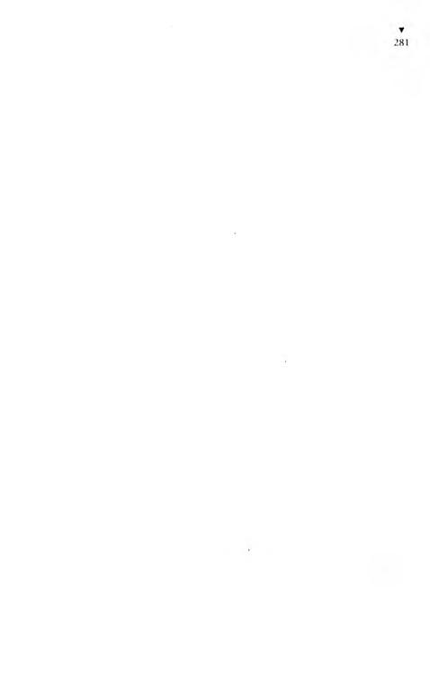
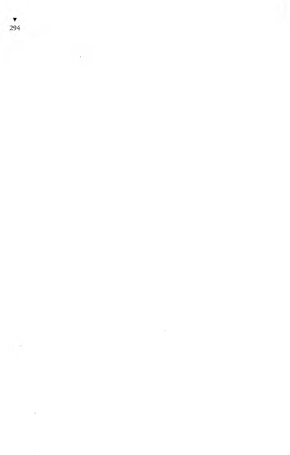
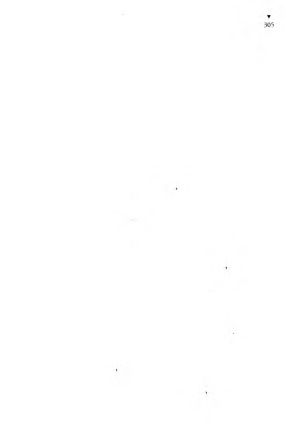
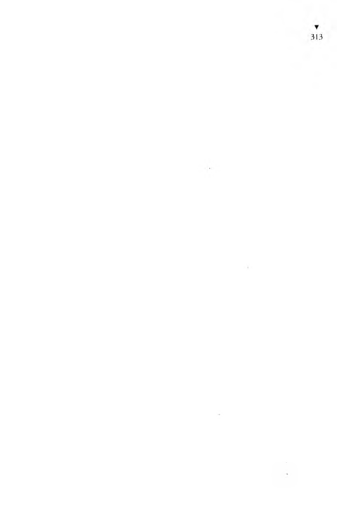
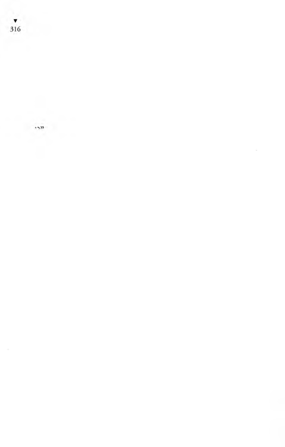
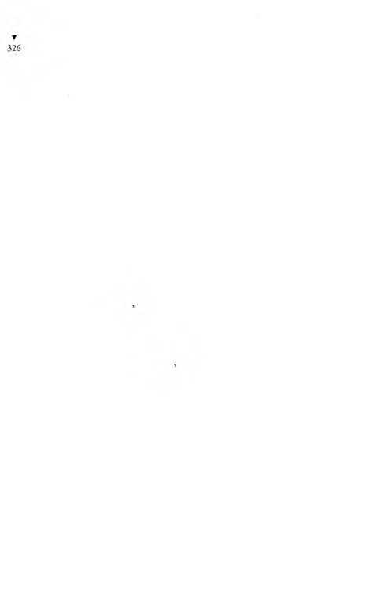
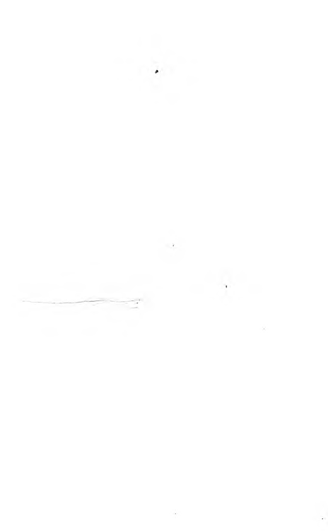
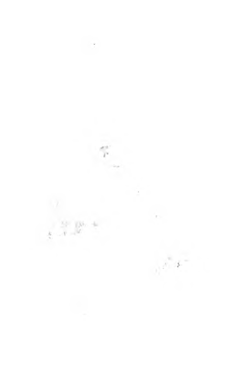
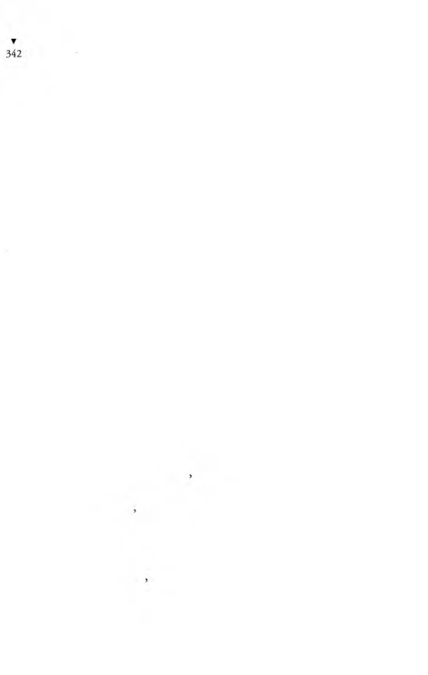
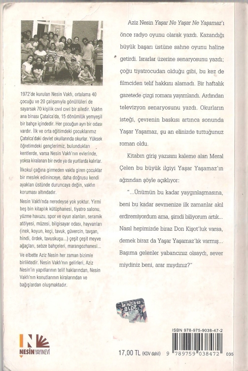

Maltızcı,
- Hem de, dedi, kış yaman olacağa benzer, ipini koparan
kendini cezaevine atar bundan sonra.
O akşam gelen beş hüküm lüden birini, eski hükümlüler
tanıyordu. O nu görünce,
- Vaaay, ulan Kolonyacı! diye boynuna sarılanlar bile olmuştu.
Kolonyacı dedikleri, üzgün mü, kızgın mı, düşünceli mi, sevinçli mi olduğu anlaşılmayan, yüzünün anlamı bellisiz biriydi.
Sanki, soygunda tanınmasın diye yüzüne kadın çorabı geçirmiş
gibiydi. Boynuna sarılanlara, öpenlere de yüz vermiyordu. Koğu
şa girip köşeye yatağını serince hiç zaman yitirmeden tezgâhını
kurup çalışmaya başladı. Torbasından küçüklü büyüklü şişeler,
el kadar bir ispirto ocağı, porselen çanaklar, beş altı da limon
çıkardı. Yaktığı ispirto ocağında su kaynatırken, meydancıdan
aldığı tenekeden yapılma bıçakla limonların kabuklarını soyup
incecik doğramaya başladı. Titiz bir kimyager gibi çalışıyordu.
Yaşar Yaşamaz da dikkatle Kolonyacı’yı izlemekteydi. Dilek-
çeci, Yaşar’ın Kolonyacı’yı dikizlediğini görünce,
- Ne yapsın zavallı, dedi, yolunu bulmak zorunda, ister istemez çalışacak. Ne zaman cezaevine girse, döşeğini serer sermez tezgâhını kurup çalışmaya başlar, taaa tahliye oluncaya kadar...
Yaşar,
- Neden bu kadar çok çalışmak zorunda? diye sordu.
Dilekçeci,
- Ne yapsın yahu, hem karısı, hem de metresi var. İçeri dü
şünce kolonyacılık yapar, dışarıda da tufacılık...
Kolonyacı’mn cezaevine geldiği, akşamın o saatinde bütün
koğuşlarda duyulmuş, kendisine Beyler Koğuşundaki zenginler
üç şişe kolonya göndermişlerdi.
Dilekçeci,
- Cezaevinde, dışarda olduğundan daha çok para kazanır,
dedi.
Para kazanılacak her iş ilgisini çok çektiği için Yaşar, nasıl para
kazandığını sordu.
Dilekçeci,
- işte böyle, dedi, görüyorsun ya, herifin hüneri var. Sihirbaz
gibidir. Kolonyayı votkaya çevirir. Kolonyadan öyle votkalar yapar
ki, hiç kolonya kokusu kalmaz. Cezaevine kolonya sokulmasına
ses çıkarmazlar. Ne zaman bu herif buraya düşse, cezaevine getirilen kolonya şişeleri de artar.
Yarımporsiyon’un düdüğü duyuldu. Gırtlağı yırtılırmış gibi
çıkan boğuk sesi de birinci koğuşa doğru yaklaşıyordu:
- İçeri, içeriii! Hadi içeri!
Düdüğünü öttürerek, öttürmediği zaman da bağırarak ko
ğuşun kapısına dek gelmiş, kapı ağzına dayanmış, daha da
bağırmaktaydı:
- İçeri, içeri!
Sis düdüğü sesli yaşlı hükümlü dayanamayıp,
- Herkes içerde ya, daha nereye gireceğiz be! diye bağırdı.
Dilekçeci, Yarımporsiyon’u göstererek,
- Allahaşkına, şunun gözlerine bak... diye fısıldadı, görüyor
musun, içeri diye bağırırken gözleri nasıl süzüm süzüm süzülüyor,
pezevenk keyiften nerdeyse bayılacak... Düdük öttürürken de
öyle, karısıyla yatıyormuş gibi keyf alıyor hergele.
Akşam yoklaması yapıldı. Yarımporsiyon, her yoklamadan
sonra söylediği gibi,
- Allah kurtarsın! dedi.
İkinci kısmın hükümlüleri de, Yarımporsiyon’un anasına
söver gibi,

- Sağol! diye hırlarcasına bağırdılar.
Cezaevinde zor geçen akşamın bu saatlerinde hükümlüler
akşam yemeği hazırlamak, sonra yemek için oyalanır, zaman
öldürmeye çalışırlarken, Yaşar Yaşamaz başından geçenleri anlatmaya başladığındanberi, sanki tiyatroya yada bir eğlenceye yetişeceklermiş gibi iteleşerek yemeklerini yiyorlardı.
Yemek üstüne çiftekâğıtlı cıgaralar sarılır, çay ocağındaki teneke
semaver fokurdarken, Yaşar da anlatmaya başlamıştı:
- Sözün neresinde kalmıştık ağbiler, en son ne demiştik?
Heykelci,
- Büyükhanımefendi dediğin kocakarı seni sepetlemişti
gecenin ortasında... dedi.
Koğuştakiler kulak kesilmişlerdi. Yalnız Kolonyacı, başını bile
kaldırmadan limon kabuklarını, rendeler gibi, teneke bıçakla
parçalıyordu.
- Evet ağbiler, Büyükhanımefendi olacak o fil biçimindeki
kocakarı, bizi gecenin yarısıdır demeden kapı dışarı etmişti,
demiştik.
Çay bardaklarındaki şekeri karıştıranların kaşık şıngırtıları
da kesilmişti.
- Baktım olası yok, bana yol göründü. Köşkün kapısından
çıkarken Anşe önüme yattı, ayaklarıma yapıştı.
“Beni burda birbaşıma koyup gitme Yaşar. Bir birleştik, bir
daha ayrılmayalım. Gideceksek birlikte gidelim.”
“Bre aman, etme Anşe’m...” diyorsam da, gözünden sel gibi
yaşlar akan Anşe’nin söz dinleyesi yok. Hem ağlıyor, hem de bana
akıllar veriyor. İkimiz birden giderseymişiz, Büyükhanımefendi
bu koca köşkte tek başına kalamaz, o zaman ikimizi birden köşkte
alakomak zorunda kalırmış.
“Ben olmasam kim bakar bu şişkoya? Birbaşına ayakyoluna bile
gidemez o. Oturağını altına ben sürerim. Pisliğini ben dökerim.
Çocuk gibi altını temizler, bebe gibi yemeğini yediririm. Ben
de gidiyorum Yaşarda dersem, amana gelir. Gitmeyelim, diye
yalvarır bile bize...”
Evet, Anşe’nin dediği doğru. Anşe gitmesin diye beni de
kovmaktan vazgeçer. Ama ne olacak, bu gecelik, yarın gecelik...
Kızına, damadına, oğluna telefon edip çağırır onları köşke... Parasıyla değil mi bu iş, karıda para çok, Anşe’nin yerine başkasını bulur, ikimizi de kovar o zaman. Bunları anlatıp,
“O zaman n’eyleriz Anşe?” diye sordum.
Bu sözüme aklı yatar gibi olunca sözü sürdürdüm:
“Çocuğumuzu düşün. Çocuğumuzun uğruna sık dişini az
daha. Bunca dayandın, azkaldı. Eskisi gibi değil ki, param var
azçok. Hele ben bir iş bulayım.”
Anşe,
“Aman, işi mişi bırak şimdi,” dedi, “evet paramız var çok şükür,
sen önce bir ev kirala. Ev kiraladın mı çıkarım burdan. Evimize
taşınırız. El kapısında çalıştıktan sonra, bir kapı salt burası değil
ya... Biz eşek olduktan kelli, sırtımıza binecek çok bulunur. Hiç
mi değil, böyle yüz çekilik şişkonun kahrını çekmeyiz.”
Dediği doğru.
Kadın beni kovdu diye, şimdi arkasından kötü konuşacak de
ğilim. Doğru dosdoğru, çok eli açık bir kadındı. Onun kapısında
epiy para edindim. Daha önce de, o “Herşeyin esası mantık”
diyen, “Islatır mı ıslatmaz mı?” diye soran deli herifin yanında
çalışırken de epiy para biriktirmiştim. îlkin kiralık ev çok, dahası,
kesemize uygunları bile var. Var olmaya var da, gelgeldim ev
sahibi, “Hadi kontratı yapalım,” deyince ben,
“Eyvah, nüfuskâğıdımı evde unutmuşum. Alıp da geleyim...”
diye ordan savuşuyorum. Nüfuskâğıdı olmayınca kontratı nasıl
yapacaksın. Kontratsız evini kiraya veren de yok...
Bir gün, bir hafta, bir ay değil ağbiler, tam iki ay her Allahın
günü sabahın köründen akşamın karanlığına dek kontratsız
kiralanacak ev aradım. Biyandan Anşe, ille de ev bulmam için
zorluyor. İyice bunaldım. Artık canımdan bezdim. Bir sabah
çayevinde bir gazetenin ilan sayfasında, birbuçuk odalı bir küçük
dairenin ilanını gördüm. Bize uygun. Hiç umudum yoksa da yapacak başka da işim olmadığından, ilandaki adrese gittim. Kapıyı
çok yaşlı bir adam açtı, ben diyeyim seksen yaşında, siz deyin
doksan yaşında bir aksakal. Kiralık ev için geldiğimi söyleyince,
beni tepeden tırnağıma süzdü. Belli ki, kılığımdan beni gözü
tutmadı. Gene de geri çevirmeyip kiralık daireyi gösterdi. Kendi
oturduğu daireyi ikiye bölmüş, birbuçuk odalı olan bölümü
kiraya verecekmiş ki, taksitle aldığı apartımanın borcunu ödesin.
Kiralık yeri gezdim. Çok güzel. Ama kirası çok.
“Sizi boşuna tedirgin ettim, bize göre değilmiş,” dedim.
O aksakal birden parlayıp,
“Size göre olanı nasıl olacakmış bakayım...” dedi.
“Doğrusunu istersen beybaba, bu dünyada bize göre olanı da
yok ya...” dedim.
Daha da kızarak,
“Niye?” diye sordu.
“Çünkü,” dedim, “benim bu dünyada yerim yok. Çünkü,
ben yaşamıyorum. Çünkü hükümete göre ben dünyada yokum.
Çünkü...”
Besbelli iyice bunalmış olduğumdan, içimi döktüm. O kızgın
aksakalın yüzü yumuşadı,
“Gel bakayım, gel...” diyerek beni kendi evine soktu. Bir
koltuğa oturttu. Kendi de oturdu.
“Anlat, neymiş? Neden yaşamıyormuşsun, neden bu dünyada
yerin yokmuş?” dedi.
Demek, ben de içimi boşaltacak birini arıyormuşum ki, bütün
olup biteni kısaca anlattıktan sonra,
“Hükümet makamları benim yaşadığıma inanmıyor,” dedim.
Ben anlatırken kıs kıs gülüyordu. Sözüm bitince gene gülerek,
“Benim durumum seninkinden daha bok da onun için gülüyorum,” diye açıkladı. Bu evde tek başına oturduğunu, elliüç yıllık eşinin kendisini bırakıp gittiğini anlattıktan sonra, “Bak
delikanlı,” dedi, “sana bu evi kiralayacağım, hem de istediğin
kiradan daha ucuza.”
“Ya kontrat? Nüfuskâğıdım yok...” dedim.
“Dertli dertlinin halinden anlar. Sen de benim gibi dertlisin,”
dedi.
Kontrat ne istemiyordu. Yalnız, evin borcunu ödeyeceği için,
kirayı zamanında ödemeliydim. Hey Allah, dünyada bu kadar
da iyi insan var mıymış... Sarılıp elini öptüm.
“Yalnız, senden bir dileğim var,” dedi.
“Buyur, her buyurduğun can baş üstüne beybaba...” dedim.
“Dedim ya, benim derdim seninkinden çok daha baskın diye... Başıma bisürü dava açıldı. Karım da bir saçmalık yüzünden beni yüzüstü bırakıp gitti. Çok yaşlıyım. Mahkemelere gidip
gelemiyorum. Duruşma günleri, mahkemeye gitmeme yardım
et, yeter...” dedi.
“Helbeeet... Beybaba... Ne demek! Sırtımda bile taşırım,”
dedim.
Anşe yeni evimizi çok beğendi.
“Amanın, kuş yuvası gibi...” diyerek sevincinden uçtu. Ufak
tefek eşya ney de aldık. Anşe ancak haftada bir, gündüzün geliyordu. Nüfuskâğıdım olmadığından Anşe’yle nikâhlanamadığımızı ev sahibimiz de biliyordu.
Aksakallı’nın, karısının neden bırakıp kaçtığını, neden o kadar
çok davası olduğunu sorup öğrenememiştim. Bigün,
“Oğlum Yaşar, iki gün sonra duruşmam var, beni mahkemeye
götürecek misin?” dedi.
“Götürürüm beybaba...” dedim.
Duruşmasının olduğu gün beybabayı aldım, birlikte mahkemeye gittik. Kendisini bırakıp kaçmış olan karısı da ordaydı.
Allah biliyor ya, bırakıp kaçtığına göre kadını genç sanıyordum.
Dahası, içimden, “Kimbilir kendinden otuz mu, kırk mı yaş
genç kadınla evlenmiştir, elbet sonu böyle olur...” diyordum.
Mahkemeye gidince, uzaktaki tahta sıra üzerinde oturan karısını
gösterdi. İki kişinin koluna girmiş, öyle oturup kalkan, tirit olmuş
bir kadın. Görünüşü, beybabadan daha yaşlı. Kocasına boşanma
davası açmış. Avukatı da var. Beybaba avukat tutmamış.
Mahkemenin koridorunda tahta sıra üzerinde oturup duruşmayı beklerken,
»
“Yaşar oğlum, vara ben de senin gibi nüfusta ölü görüneydim.
Vara, nüfuskâğıdım olmayaydı. Vara senin gibi, daha doğmadan şehit düşeydim. Benimki, seninkinden çok, çok daha kötü...” dedi.
N için avukat tutm adığını sordum. U tandığı için avukat
tutmadığını söyledi.
“Karım, ihanet ettim diye beni mahkemeye verip boşanma
davası açtı. Bu yaştan sonra ne ihaneti, nasıl ihanet? Yahu, dedim
karıma, ben kendim ayakta dik duramıyorum, nasıl ihanet ederim sana...” diye anlatırken, bizden iki sıra ötede oturan karısı, sözlerini duymuş olacak ki, başını bize çevirip,
“Resmi belge var, belge... Koskoca hüküm et belgesi... İhanet
etmedin de, o gayri meşru piçler nerden çıktı?” diye bağırdı.
Beybaba hiç sesini çıkarmadı. Bana,
“Gazetelerin diline düşeceğim diye ödüm patlıyor,” dedi.
Karısının neden boşanma davası açtığını anlatmaya başlamıştı
ki, mübaşir adını bağırdı:
“Haşan Oğüüüt...”
Koluna girdim. Yerinden kalktı. Duruşma salonuna girdik. Ben
arkada oturdum. Beybaba da davalı yerine geçti. Yargıç, kimliklerini sorup yazdırdıktan sonra, davacı olan kadına anlatmasını söyledi. O tirit olmuş yaşlı kadın birden canlanıp olduğu yerde
serçe gibi sıçraya sıçraya öter gibi konuşmaya başladı:
“Hâkim Bey, biz elliüç yıllık evliydik.”
Hâkim kadının sözünü kesip,
“Şu dakikaya kadar gine de evlisiniz...” dedi.
Kadın,
“Ne yazık ki, evet öyle...” deyip sürdürdü sözünü: “Bizim
üç kızımız var. Adları da İlkgül, Tekgül, Songül... Üçü de evli
barklı, çoluk çocuk sahibi. Üçünün de boylarınca çocukları var.
Torunlarımız bile evlendi. Bu yaştan sonra, kocamın bana ihanet
edeceğini nerden bilirim...”
Yargıç sık sık kısa kesmesi için kadını uyarıyor, ama kadın hiç
oralı olmuyordu:
“Nasıl olduysa, emekli aylığı cüzdanımız kaybolmuş. Bey,
emekli aylığını almaya gidecek, cüzdan yok... Evin içini altüst
ettik. Allahtan işte, cüzdan kaybolmasa, bana ihanet ettiğini
anlamayacaktım. Emekli cüzdanını yeniden çıkarmak için
nüfuskâğıdı gerekti. O da yok... Demek hepsini birden biyerde
düşürmüş. Bey, yeniden nüfuskâğıdı çıkarmak için nüfus müdürlüğüne dilekçe verdi. Nüfus kütüğü Bingöl’ün bir ilçesinde olduğu için oranın nüfus müdürlüğüne yazıldı. Biz ordan iki
nüfuskâğıdı gelecek diye bekliyoruz; biri kocamın, biri de benim.
Aaa, bir de ne görelim, bize beş nüfuskâğıdı birden gelmez mi!
İkisi bizim, üçü de çocukların. Allah biliyor ya, ben ilkin bizim
kızların nüfuskâğıdı sanmıştım. Evet ama, bizim kızların nüfus-
kâğıtları kendilerinde. Hem bu üç nüfuskâğıdı başka üç çocuğun,
ikisi erkek, biri kız... Adları da bir acaip, hiç öyle ad duymadım.
Tınaz, Poyraz, kızınki de Aytunaz... Benim içimde kötülük yok,
ben önce yanlışlık oldu, bizim çocukların yerine başka çocukların
nüfuskâğıtlarını yanlışlıkla gönderdiler sandım. Bey de, yanlışlıkla
olmuştur diye beni kandırdı. Yeniden dilekçe verip, nüfuskâğıtları
gönderilen üç çocuğun bizim çocuklarımız olmadığını, bizim
üç çocuğumuzun da nüfus kayıtlarını gönderdik. Bu sefer ne
olsa beğenirsiniz... Bizim kendi çocuklarımızın da nüfuskâğıdı
gönderildikten başka, öbür üç çocuğun babasının da Haşan Öğüt
olduğunu bildiriyorlar. Resmen nüfus m üdürlüğünün yazısı
böyle... Bizim beyin üç çocuğu daha varmış da benim haberim
yok. Hem de benimle evliyken...”
Yargıç susturmak istiyorsa da kadının susacağı yok...
Avukatı söz aldı:
“.... eşi Bay Haşan Öğüt’ün, evlilik dışı üç çocuğunun bulunduğu nüfus müdürlüğünden gönderilen yazıyla sabit olduğundan, eşine ihanet etmiş olduğu anlaşılmakla...” falan filan, “evlilik
anlaşmasının bozulmasına karar verilmesini istiyoruz.”
Yargıç, beybabaya söz verdi. Beybaba anlattı:
“Bir yanlışlık olduğu ortadan Çünkü, nüfus kaydımın bulunduğu Bingöl Nüfus Müdürlüğünden benim çocuğum diye nüfuskâğıtları gönderilen üç çocuktan biri sekiz aylık, biri de
benden iki yaş büyük... Bendeniz, seksendört yaşındayım efendim. Benim, sekiz aylık çocuğum nasıl olabilir. Bize gönderilen nüfuskâğıtlarında, benim oğlum diye gösterilen Tınaz ise, nü-
fuskâğıdında yazılı doğum tarihine göre, benden iki yaş büyük
efendim. Benim oğlum olamaz, olsa olsa ağabeyim olur...”
Beybabanın çaçaron karısı ayağa fırladı:
“Efendim, doğum tarihini yanlış yazmışlardır... Yanlışlık
olamaz mı yani...”
Yargıç, zabıt kâtibine kararı yazdırdı:
“Davalının nüfus kaydının ve kaydında bulunan çocuklarının
nüfus kayıtlarının mahkememize gönderilmesi için, Bingöl İli
Nüfus Müdürlüğüne yazılmasına ve duruşmanın... falan güne
kalmasına...”
D uruşm a salonundan çıkınca beybaba, karısının yanına
sokulup,
“Hanım etme, ele güne rezil oluyoruz. Bizim bir ayağımız
çukurda, öbür ayağımız da nerdeyse çukura girecek. Bu yaştan
sonra elliüç yıllık yuvamızı yıkma. Yahu, benim sekiz aylık çocuğum olabilir mi hiç...” diye yalvardıysa da karısı,
“Olur olur... senden herşey umarım...” deyince, çevresini
kuşatanlar gülüştüler.
Beybabayı eve götürürken, durumunun sandığı kadar kötü
olmadığını, nasıl olsa yanlışlığın anlaşılacağını dilimin döndü-
ğünce anlatmaya çalıştım. O zaman,
“Aman oğlum; bu fazladan üç çocuk için başıma gelen bela
yalnız karımın benden ayrılması olsa ne iyi... Ama daha ne işler
açıldı başıma. Savcılık da soruşturma açtı,” dedi.
“Ne diye?” diye sordum.
“Ne diye olacak, insanların hiç işi yok, birisi ihbar etmiş olmalı.
Savcılık da bana, bu üç çocuk şimdi nerde, diye soruyor. Öyle
ya, ben bu çocukların babasıysam, çocuklar nerde?”
“Çocuklar nerde olabilir, elbette biyerlerdedir.”
“Savcılık anlıyor mu? Çocukların adresini, yerini soruyor.
Ne oldu çocuklar? Bir cinayete mi kurban gittiler? Dünyada
neler oluyor. Fazladan üç çocuğu bulamazsam, ister misin, bana
çocukların kaatili desinler...”
“Hiç öyle şey olur mu beybaba, sonunda elbet anlaşılır yanlışlık...”
Beybaba kızdı,
“Yahu, sen bile böyle söylüyorsun. Yanlışlık anlaşılır da, senin
başındaki yanlışlık niye anlaşılmıyor...” dedi.
“Öyle ya...” dedim.
Bir hafta kadar sonra, beybabayı yeniden savcılıktan çağırmışlar. Birlikte gittik. Savcı, önündeki dosyaya bakarak, Tınaz, Poyraz ve Aytunaz adlı çocuklarının nerede olduklarını, adreslerini sordu.
Beybaba,
“Geçen sorgumda da arz etmiştim efendim. Benim bu adlarda
çocuklarım yok. Benim, Ilkgül, Tekgül ve Songül adlarında üç
kızım var. Bu adlarını saydığınız, fazladan çocuklardır,” dedi.
Savcı,
“Geçen sorgunuzda, Bingöl Nüfus M üdürlüğünden daha
cevap gelmemişti. Bingöl Nüfus Müdürlüğünden yazımıza gelen
cevapta, üç değil, altı çocuğunuz olduğu bildiriliyor. Nerde öbür
üç çocuğunuz?” dedi.
Beybaba boyuna,
“Onlar fazladan çocuklar...” deyip duruyordu.
“Fazladan veya değil, orası sizi ilgilendirir. Çocuklar nerde?”
Beybaba,
“Efendim,” dedi, “bendeniz seksendört yaşındayım. Benim
çocuğum denilen Aytunaz adlı kız çocuğu ise daha bu yıl doğ
muş, sekiz aylık. İnsaf ediniz, benim yaşımda bir adamın çocuğu
olabilir mi?”
Savcı,
*
“Sizin bu yaşta çocuğunuzun olup olmayacağı savcılık makamını ilgilendirmez. Bu bir tıp sorunudur. Gazetelerde okuyoruz, doksan, yüz yaşındakilerin bile çocuğu olabiliyor,” dedi.
Beybaba ağlamaklı bir sesle,
“Fazladan üç çocuktan büyük oğlan da seksenaltı yaşında,
benim yaşımsa seksendört... Savcı Bey, benden iki yaş büyük
oğlum nasıl olur?” dedi.
Savcı, beybabanın eşi gibi,
“Bir tarih yanlışlığıdır o... Yazı makinesinde yazılmıştır,”
dedi.
Sonunda, savcı çok yaşlı olduğu için şimdilik polis soruşturması açtırmadığını, ama adresleri bilinmeyen bu üç çocuğun kayıtlarının silindiğini bildiren mahkeme kararı getirilmezse,
polis soruşturması açtıracağını söyleyerek beybabayı bıraktı.
Eve dönerken durmadan, kendi kendine söyleniyordu:
“Karıma ihanet etmişim... Benim ihanet edecek halim mi var
be... Nüfus cüzdanlarımızı yeniden çıkartalım diye durup dururken başımıza iş açtık. Al sana üç fazladan çocuk... Savcı haklı...
Öyle ya, nüfus kaydındaki fazladan üç çocuk nerde? Ulan, şurda
kaç günlük ömrüm kaldı da yeni nüfuskâğıdı çıkarmak istedim...
Yaşar oğlum, iyi ki sana nüfuskâğıdı vermiyorlar. Ya bir de benim
gibi fazladan üç çocuğun var deyip de, göster çocukları, çocukları
ne yaptın, diye sorarlarsa, daha mı iyi...”
Beybaba,
“Bu iş sarpa sarıyor, avukatsız olmayacak...” diyordu. Ama o
gün çok yorulduğundan avukata gidemedi. Başka bigün beybabayı tanıdığı avukata götürdüm. Avukata olup biteni anlatınca, avukat,
“Hiç merak etme, kolay... Hallederiz. Asliye H ukuk Hâkim-
liği’nde dava açacağız,” dedi.
“Kimi dava edeceğiz?” diye sordu beybaba.
Avukat da,
“Nüfus müdürlüğünü... Sen vekâletnameyi çıkart, ben davayı
açarım,” dedi.
Mahkeme kalemine dava dilekçesini ben götürdüğümden,
dilekçe hâlâ aklımdadır:
“Dava konusu: Nüfus kaydının tashihi talebinden ibarettir.
Olay: Eşim Hasna Ö ğütten İlkgül, Tekgül ve Songül adlı çocuklarım mevcuttur. Bu husus, Bingöl ili, Karlıova ilçesi, Merkez nahiyesi, Karapınar köyü, hane bilmem kaç, cilt bilmem kaç,
sayfa bilmem kaça kayıtlı.
Nüfus cüzdanlarımızı yenilem ek için yaptığım müracaat
üzerine tarafıma fazladan üç adet cüzdan yollanmış olup, bu
cüzdanlardaki uydurma üç çocuğu, kendi çocuklarımla birlikte
nüfusta kayıtlı kılınmış göstermektedir. Bir yanlışlık sonucu
yazıldıklarında şüphe bulunmayan Tınaz, Poyraz, Aytunaz adlı
çocukların kayıtlarının düzeltilmesinde veya silinmesinde zaruret
bulunmaktadır. Yanlışlıkla üzerime kayıt edilmiş bu çocuklardan
birinin daha bu yıl, bir diğerinin ise, ben doğmadan iki yıl önce
doğmuş oldukları, doğum tarihlerinden anlaşılacağından, hakikate uymayan kayıtlar olduğu meydandadır.
Hukuki sebepler falan fırtık...
Sonuç: Yukarda arz ettiğim sebeplerle, aslında mevcut bulunmadığı halde, nüfusuma kaydedilen adlarını saydığım üç şahsın kayıtlarının nüfusum dan silinm esine ve böylece yanlışlığın
düzeltilmesine karar verilmesi saygıyla talep olunur. Davacı:
Haşan Öğüt.”
Yaşar, dilekçeyi okur gibi anlatınca, Dilekçeci,
- Ulan Yaşar Yaşamaz, beni bile bastırdın be... Avukat kesilmişsin sen... dedi.
Koğuşun en yaşlısı,
— Oğlum Yaşar, dedi, insanda şans olmalı şans... Bak sen
kendine bitek nüfuskâğıdı bulamıyorsun, elin şanslı adamına
fazladan üç nüfuskâğıdı birden gönderiyorlar. Allahın kısmetli
kulu...
,
Yaşar, yaşlı hükümlüye,
— Baba, o daha kötü, dedi, ben ona bakar da kendi halime şükreder, avunurdum. Hiç olmazsa bana, sen ölmüşsün, diyorlar. O
zavallıdansa, üç çocuğunu öldürdü mü diye kuşkulanıyorlar.
Hamurkâr,
— Peki, sonu ne oldu yahu, insanı çatlatma da anlat. Adamcağız
kurtuldu mu üç fazla çocuktan? diye sordu.
Yaşar,
— Kolay mı? dedi. Bingöl Nüfus Müdürlüğünden mahkemeye
cevap geldi.
— Ne diyor cevapta?
— Bu üç çocuk da kayıtta üzerindedir, altı çocuğun var diyorlar
cevapta.
— Adam ne yaptı, o aksakal?
— Ağbicim, hani derler ya, pişmiş tavuğun başına bile gelmemiş
diye... İşte öyle, Haşan Öğüt’ün başına gelenler pişmiş tavuğun
başına gelmemiştir. Ama araya Riçırt Reşat girdi, onu anlatmadan
beybabanın sonunu anlatamam...
Heykelci,
— O da kim? diye sordu.
— Riçırt Reşat mı? O nu anlatmak uzun sürer. Yarın gece de
onu anlatırım.
Yataklarında dinleyenler, başlarını yastıklarına koydular.
Oturanlar da yataklarına yattılar. Yalnız Kolonyacı, döşemeye
serili incecik döşeği üstünde titiz bir kimyager gibi çalışıyor,
kolonyaları votkaya çeviriyordu.
Yaşar Yaşamaz, sabahleyin erkenden helaya gitmek için yatağından kalktığında Kolonyacı’yı yine öylece çalışırken gördü. Bütün gece uyumadan mı çalışmıştı, yoksa sabahın çok erken saatinde
uyanıp çalışmaya mı başlamıştı? Yüzü anlamsız Kolonyacı’ya
Yaşar bunu soramadı.
R içırt Reşat D enilen Casus
B ir in c i koğuştakilerin çoğu b ütün gün, fazladan üç çocuk
üzerinde konuşup tartışmışlardı. Aksakal Haşan Ö ğüt, nüfus
kaydındaki yanlışlık anlaşılıp fazladan üç çocuğun babası olmaktan kurtulmuş muydu, yoksa çocuklarını ortadan kaldırıp yok etmiş bir cani baba olarak başı belaya mı girmişti?
- M üslüman olan casusu anlatmamış, sonucu söylemişim,
neye yarar... Olmaz ki... Akşama, ilkin şu casus Riçırt’ı anlatayım,
sonra da Aksakal Haşan Ö ğüt’ün ne olduğunu anlatacağım...
diyordu.
Hükümlüler, genellikle kendileri de haksızlığa uğradıklarına
inanmış olduklarından, Aksakal Haşan Ö ğ ü t’ün fazladan üç
çocuk yüzünden başının derde girmiş, dahası, hapse bile atılmış
olduğunu iddia edenler çoğunluktu. Buna karşılık Yaşarın anlattığı bu olaya hiç inanmayanlar da vardı. Artık bu denli de olur muydu yani? Bir adam durup dururken, hiç tanıyıp bilmediği üç
çocuğun babasısın, çocuklar nerde, diye nasıl suçlanabilirdi?
Yaşarın, yanında izmaritçi olarak çalışmamasına içerlemiş
olan Avcı,
- Anlarım, nüfus kaydında yanlışlık yapılabilir. Bir çocuk,
babasından iki yaş büyük yazılmış olabilir. Haa, bak bu olur. Ama
havadan üç çocuk kaydına yazılıp da, “Çıkar çocukları!” diye
insan suçlanır mı yahu? Bu Yaşar Yaşamaz, nişangâhsız atarken,
artık iyice ipin ucunu da, lafın tadını da kaçırdı... dedi.
Maltızcı karşı koyuyordu:
- Öyle söyleme arkadaş. Bu işler bizim başımıza az mı geldi
yani... Hani ne demişler: Olmaz olmaz, deme, olmaz olmaz!
Yaşar Yaşamaz, kendisi için koğuşta tartışılanları duyuyor,
ama duymazdan geliyordu. Akşam yoklaması saatinde yatağına oturmuş, cezaevine getirdiği kirli bez torbasını didik didik
araştırmaktaydı. Uçları kıvrık eski cep defterleri, kopuk defter
kâğıtları, örselenmiş ve buruşuk kâğıtları karıştırıyor, bu kâğıtlardaki yazıları okumaya çalışıyordu. Belli ki bişey aramaktaydı.
Akşam yoklamasından sonra da yemek bile yememiş, o kâğıtları
didiklemekle uğraşmıştı.
Yaşar’ın anlatacaklarını dinlemek için koğuştakiler her akşam
olduğu gibi durumlarını almışlardı. Kimisi yatağına uzanmış,
kimisi de koğuşun ortasındaki uzun tahta masaya dirseklerini
dayamış Yaşarı bekliyordu.
Kral Sami,
- Hadi Yaşar oğlum, seni bekliyoruz! diye seslendi.
Yaşar, o kâğıtlardan başını kaldırmadan,
- Bir dakka ağbicim, şimdi geliyorum... dedi.
Bisüre daha arandıktan, torbayı karıştırdıktan, yazılı kâğıtları
okuduktan sonra, bu örselenmiş kâğıtların içinden dörde katlı
bir kâğıt alıp ortaya geldi. Uzun tahta sıraya oturdu. Tahta aralıklarına yemek artıkları dolmuş yağlı masaya dirseklerini dayadı.
Her akşamki gibi, dinleyicilerini hazırlamak için giriş yapmadan
söze başladı:
- Müslüman olan casusu anlatmamış olamaz! İlkin ordan
başlayalım söze. Kiracısı olduğumuz apartıman dar ve küçük, üç
katlı. Biz alt kattayız. Önce de söylediğim gibi, alt kat iki bölük.
Bir bölüğünde Haşan Öğüt, bir bölüğünde biz oturmaktayız.
Orta katta Riçırt denilen bir adam var. Üst kat satılık olduğundan
boş duruyor.
Bu Riçırt denilen adam, adından da belli, yabancı. AmaTürk-
çesi iyi. Biraz kırık, çetrefil bir Türkçesi var. Kanı sıcak bir adam,
hemen insana yakınlık gösteriyor, tatlı dilli... Beni her görüşünde
evine çağırır. Ben de giderim. Çay yapar içeriz. Bu paralı yabancı
adamın, ne diye bu yoksul Müslüman mahallesine gelip ev kiraladığını bitürlü anlamam. Bir akşam evindeyken bana ne iş yaptığımı sordu. Ben de söyleşi olsun diye başımdan geçenleri özetleyip,
“Nüfuskâğıdım olmadığından hiçbir işe almıyorlar,” dedim.
Çok üzüldü.

“Sana bir iyilik yapmak isterim,” dedi.
“Eksik olma Riçırt Bey, ama bana kimse iyilik yapamaz.
Benim işim de, ev sahibim Haşan Öğüt’ün işi de Allaha kalmış
artık...” dedim.
Sonra ben de ona ne iş yaptığını sordum. Bir yabancı firmanın
burdaki işlerine neye bakarmış. Yakında emekli olacakmış.
“Emekli olunca burda yerleşeceğim,” dedi.
Allah Allah, gel de şaşma!
Aradan bir zaman geçti. Bir akşam gene evinde konuşurken
Riçırt bana,
“Yakında Müslüman olacağım,” dedi.
Yahu, bu adam, insanı şaşırtmak için yaratılmış. Zengin olduğu
halde, gelir, yoksullar mahallesindeki bir küçük apartıman dairesine sığışır. Hıristiyan olduğu halde, Müslümanların arasında yaşar.
Emekli olunca kendi yurduna gitmez, burda yerleşmeye kalkar.
Derken, günün birinde,
“Müslüman olmak zorundayım,” dedi.
“Riçırt Bey, hiç zorla Müslüman olunduğunu duymamıştım,”
dedim.
“Sen tarih bilmediğinden öyle sanıyorsun. Dünyadaki Müslümanların yarısından çoğunun ataları kılıç zoruyla Müslüman olmuşlardır,” dedi.
Adam herşeyi de biliyor. Buyüzden, sözüne karşı gelemedim.
“Hangi Müslüman sana kılıç çekti de, ne zoruna Müslüman
oluyorsun?” dedim.
“Ah! Vara kılıcını çekip bir Müslüman kellemi almaya kalkaydı.
O ndan da kötüsü ben âşık oldum bir Türk kadınına. Ailesi,
Müslüman olmazsam kızlarını bana vermiyor. Anladın mı neden
Müslüman olmak zorunda kaldığımı...” dedi.
Aradan bir zaman daha geçti. Bir akşam gene beni evine çağırdı.
“Yarın sünnet oluyorum,” dedi.
Riçırt Beyin sünneti zor oldu. Ağaç yaşken eğilir de, adam
kartken sünnet edilmez ya... Evet, zor oldu. Herif, iki hafta
evinde yatağından kalkamadı. Sanırsın, sünnetini kesmediler de,
farzını kökünden kopardılar. Sünnet edilip Müslüman olduktan
sonra Riçırt Bey, Reşat Bey oklu. Gelgeldim kimse ona Reşat
Bey demez, Riçırt Reşat Bey derdi.
Evlendi. Karısını evine getirdi. Yahu, öyle bir karı ki, şuncacık
aklı olan, öyle bir karı için, değil sünnetini kestirmek, ayak
tırnağını bile kesmez. Biz bu Riçırt Beyle çok kaynaşıp içli dışlı
olduğumuzdan bigün ona,
“Yahu Riçırt Bey, darılma ama, sana bişey soracağım. Gerçekten, sen bu karına âşık oldun da mı evlendin?” diye sordum.
Bir yabancı dili en iyi öğrenmenin yolu, anadili o dil olan bir
kadınla evlenmekmiş.
“İyi ama, sen Türkçeyi biliyorsun,” dedim.
Biliyormuş, ama anadili gibi konuşamıyormuş. Konuşurken,
yabancı olduğu anlaşılıyormuş.
“Şimdi bu senin hanım, sana Türkçe mi öğretiyor?” dedim.
“Sen aşağı kattan, tependeki bizim kavgamızı duymuyor
musun? Sabah akşam kavga ediyoruz. İnsanın bir dili öğrenmiş
olduğu üç şeyden anlaşılır,” dedi.
“Neymiş o üç şey?” dedim.
Söyledi:
“Birincisi, o dilde rüya görüyorsa. İkincisi, o dilde sevişiyorsa.
Üçüncüsü de, o dilde kavga edebiliyorsa. Ben bu karıyla kavga
ede ede Türkçeyi anadilim gibi öğreneceğim.”
Gerçekten de kısa zamanda Riçırt Reşat Beyin dili düzeldi
iyice. Çok kişi onun Türk olmadığına inanmazdı.
Biz onunla arkadaşlığı ilerlettikçe Riçırt Beyin geçmişini
öğrenip her geçen gün daha da çok şaşıyordum. Bu herif dokuz
kez mi, on kez mi ne evlenmiş. Karıları, Koreli, Fransız, Rus,
Viyetnamlı filanmış.
“Riçırt Bey, kadın koleksiyonu yapmıyorsun ya, ne diye bu
kadar karmakarışık çeşitli kadınla evlendin?” diye sordum.
Ora insanlarının dillerini öğrenmek için o kadınlarla evlenmiş.
Buyüzden de Korece, Caponca, Viyetnamca, daha nice diller
bilirmiş.
Biyandan Riçırt Beyle tamşlığı koyulturken, biyandan kendime iş ararken, biyandan da bizim Aksakal Haşan Ö ğüt’ü, savcılığa, mahkemeye götürüp getiriyorum. Zavallının işi sürüp
duruyor. Biteceği, sonuçlanacağı da yok. Çünkü, bir yanlışlığı
düzeltelim derken, araya beş altı yeni yanlış daha giriyor. Oraya
bişey soruluyor, ordan cevap olarak başka bir yanlış şey geliyor.
Haydi bir daha soruyorlar. Her yazının gitmesi, cevabın gelmesi,
yanlışın düzeltilmesi, düzeltelim derken daha da yanlış yapılması
aylar sürüyor. Öyle yanlışlar yapılıyordu ki, bigün Aksakal Haşan
Öğüt bana şöyle dedi:
“Oğlum Yaşar, ben bu fazladan üç çocuğa razı olsam iyi olacak,
çünkü biz bu yanlışı düzeltelim derken, ister misin bu sefer de
fazladan beş nüfuskâğıdı daha göndersinler. O zaman çık bakalım
işin içinden çıkabilirsen. Allahtan bişeycik istemem, bu sefer
fazladan beş çocuk, benim hanımın nüfus kaydında görünmeli ki,
son günümde hiç olmazsa, ölürsem de keyfîmden öleyim...”
Gene evlerine bir gidişimde, ben odada otururken, salonda
karısının Riçırt Beye,
“Bu ipsiz sapsız herifle konuşmaktan ne anlıyorsun! Yüz verme
şu n’idüğü belirsiz hödüğe!” dediğini duyduğumdan evlerine
gitmiyordum. Bu kez Riçırt Bey bana gelmeye başlamıştı. Bir
akşam gene gelmişti. O gün boşu boşuna iş aramaktan yorulmuş,
bunalmıştım. Yakınıp içimi döktüm.
“Sana bir sır vereceğim, bilirim senden sır çıkmaz!” dedi.
“Öyledir, bizden can çıkar, sır çıkmaz!” dedim.
Birden damdan düşer gibi,
“Ben casusum!” demesin mi!
Şaşmak da ne demek canım, sanki küçük dilimi yuttum
da, soluğum kesildi. Gırtlak boğumumdan sesim çıkmıyor ki,
“Aman burda durma, kalk git!” diye yalvarayım. Nice zaman
sonra kendime gelince,
“iyilik yapacağım sana, iyilik yapacağım deyip duruyordun,
bana yapacağın iyilik bu muydu! Yaktın beni Riçırt Bey... Zaten
karışık bir adam olduğunu çoktan anlamalıydım...” dedim.
“Rengin sarardı korkudan'. Korkacak bişey yok,” dedi.
“Yahu, daha ne olsun... Ben rfamusumla yaşamak isterken bile
beni yaşar saymıyorlar, şimdi bir casusun arkadaşı olduğumu
duyarsa hükümet beni asar!” dedim.
“Daha doğmadan şehit olmuş insanı nasıl asarlar!” dedi.
“Bildiğin gibi değil Riçırt Bey... Benim işime yarar bişey olunca, evet, o zaman bana yaşamıyorsun diyorlar ama, kendi işlerine gelince yaşıyorsun diyorlar. Okula gideceksem, yaşamıyorum.
Askere alacaklarsa, yaşıyorum. Nüfuskâğıdı istersem, yaşamıyorum. Vergi alacaklarsa, yaşıyorum. İş ararsam, yaşamıyorum.
Ceza keseceklerse, yaşıyorum. Dava açarsam, yaşamıyorum.
Tımarhaneye kapatacaklarsa, yaşıyorum. Evleneceksem, yaşamıyorum. Ama şimdi bir casusla içli dışlı olduğum duyulursa, yaşıyorsun der de asarlar.”
Ben korku içindeyim, o daha gülüyor.
“Hiç korkma. Sen casusluk etmeyeceksin, yurduna çok büyük
hizmet edeceksin. Okul yüzü görmediğinden bu işleri bilemezsin. Bildiğin gibi değil, ben çok büyük casusum. Sen gidip beni hükümet makamlarına ihbar edince, çok büyük hizmet etmiş
olacaksın. O zaman sana nüfuskâğıdı da verirler, para da, iş de,
herşey de verirler...”
Uzun uzun anlattı. O buraya, bizim memleket aleyhine casusluk için gelmemiş. O nun işi daha başkaymış. Burada yaşamaya başlayınca, bizim insanlarımızı çok sevmiş. Hele dilimizi öğrenip
Müslüman da olunca, burdan hiç ayrılmamaya, emekli olup bu
iyi insanların arasında yaşamaya karar vermiş.
“Hepsi iyi de, neden beni bu işlere bulaştırıyorsun? Neden
kendin gidip teslim olmuyorsun?” dedim.
Elbet kendisi de gidip teslim olurmuş ama, bana çok acıdı
ğından bir iyilik yapmak istiyormuş. Sözde ben teslim olması
için ona yol gösterecekmişim. Böylece bir taşla iki kuş birden
vuracakmışız. Hem o burda yerleşecek, hem hizmetime karşılık
bana iş vereceklermiş. Benim de aklım yatar gibi oldu. Yalnız
ben, kime gidileceğini, nerden gidileceğini, kime, nasıl ihbar
edileceğini bilmiyordum.
Riçırt Reşat Bey,
“Sen orasını bana bırak. Ben gidilecek yeri biliyorum. Sen
yanımda gel, yeter,” dedi.
Taksiye bindik, gidiyoruz. Arabada fısıl fısıl anlatıyor:
“Göreceksin, benim kim olduğumu öğrenince şaşırıp kalacaklar. Ortalık karışacak. Kıyamet kopacak. Kolay değil, büyük bir ajan bütün planları teslim ediyor. Unutma, oraya sen beni
götürmüş olacaksın. İşte bütün gizli planlar da bu çantanın
içindeki dosyada.”
Şöyle şaşıracaklar, böyle şaşıracaklar diye anlatıyor, anlatıyor,
sonra bana soruyor:
“Söyle bakayım, ne diyeceksin oraya gidince?”
Bana ezberlettiği gibi cevap veriyorum:
“Size ajan sıfır iks onüç’ü getirdik efendim,” diyeceğim.
“Tamam... Sen böyle deyince, yerlerinden fırlayacaklar, başları
tavana vuracak... Key-Si-Bi’den ajan sıfır iks onüç...”
Şoföre durmasını söyledi.
“İşte karşı casusluk işiyle uğraşan daireye geldik,” dedi.
Arabadan inip içeri girdik.
“Şu karşıki kapıyı tıklat. İçerde dazlak kafalı, tombul bir adam
vardır.”
Kapıyı tıklattım. İkimiz birden girdik. Gerçekten, masada dazlak kafalı, tombul tombalak biri var. Riçırt Beyin bana öğrettiği gibi, selam verdikten sonra dedim ki:
“Efendim, size, Key-Si-Bi’den ajan sıfır iks onüç’ü getirdim.”
Ben böyle söyler söylemez, yerinden fırlayıp başı tavana vuracak gibi sıçrayacak diye beklerken, o tombalak adam, önündeki yazıdan başını yavaş yavaş kaldırıp,
“Ha?” diye sordu.
Benim beceremediğimi görünce, bu kez Riçırt Bey konuştu:
“Ben ajan sıfır iks onüç, Key-Si-Bi’den...”
Masadaki adam,
r i ç i r t r e ş a t d e n î l e n c a s u s
▼
299
“Memnun oldum efendim, buyrun oturun, rica ederim,” dedi.
Riçırt Bey oturdu. Ayıp ofur diye ben oturmadım.
Riçırt Reşat Bey,
“Asıl adım Riçırt Velling’dir. Ama adımı değiştirip Reşat Veli
yaptım,” dedi.
Masadaki adam,
“Bizden bir isteğiniz mi var?” diye sordu.
Karşısındaki adamı şaşıracak diye beklerken Riçırt şaşırdı,
“Ben casusum efendim,” dedi.
“Yaaa, öyle mi? GüzeeelL” dedi tombalak adam.
Bisüre durduktan sonra,
“Casus musunuz?” diye sordu.
Oh çok şükür anlayabilmişti. Riçırt Bey, sonunda tanınmış
olmaktan duyduğu sevinçle,
“Evet, casusum,” dedi.
“Öyleyse üst kata çıkın, kapısında otuzüç yazılı odadaki beyi
görün.”
Riçırt Bey, beni böyle tanırlar, şöyle tanırlar, ajan sıfır iks onüç
dedin mi, dünyada tanımayan gizli güvenlik örgütü yoktur falan
filan diye bana öyle atmıştı ki, şimdi burda tanınmayınca benden
utanmış gibiydi. Koridora çıkınca,
“Şimdi gideceğimiz adam, bak nasıl tanıyacak beni. Zayıf,
gözlüklü biridir, adı da Basri olacak,” dedi.
Otuzüç sayılı odayı eliyle koymuş gibi buldu. İçeri girdik. Dediği gibi içerde, zayıf, gözlüklü bir adam vardı. Ben o adama,
“Efendim, size Key-Si-Bi’den ajan sıfır iks onüç’ü getirdim,”
diyecek yerde, herhalde korkudan olacak, dilim dolanıp da,
“Sıfır onüç’ten Key-Si-Bi’yi getirdim,” deyince, Riçırt Bey
kendini tanıtmak zorunda kaldı:
“Ben Key-Si-Bi’den ajan sıfır iks onüç...”
Gözlüklü adam ayağa kalkıp elini uzattı,
“Ben Basri Filanca...” diye, soyadı aklımda kalmadı, kendini
tanıttı. El sıkıştılar.
Gözlüklü adam,
“Bu delikanlı için iş vermemizi istiyorsanız, kadromuz dolu.
Hatta kadro fazlamız bile var da, kimi ajanlarımızı bordroda büro
işçisi olarak gösteriyoruz. Yerimiz yok!” dedi.
Riçırt Bey, biraz sertçe,
“Casus olduğumu söylüyorum size,” dedi.
Gözlüklü adam,
“Olabilir,” dedi. “Ben de size kadroda boş yerimiz yok diyorum.”
“Benimle ilgilenecek birisi yok mu burda? Çok gizli planlar
var elimde...”
“Baştan söyleseydiniz ya bunu... Üçüncü kata çıkın, koridorun
solunda...” derken Riçırt Bey,
“Biliyorum, sağdaki ilk oda...” dedi.
Gözlüklü adam,
“Biliyorsanız, neden bana geldiniz?” diye Riçırt Beyi tersledi.
Üçüncü kattaki odaya girdik. Riçırt Bey gene kendini casus
olarak tanıttı.
Ordaki görevli,
“Sizi kim gönderdi?” diye sordu.
Riçırt Bey,
“Kendim geldim,” dedi.
“Yani sizi bana kim tavsiye etti? Bir tavsiyeniz var mı?”
Riçırt Bey, yeniden kimliğini söyledi.
Adam,
“Elinizdeki gizli planlar hangi konuda?” diye sordu.
“Patlatma yıkma işleriyle ilgili...”
“Haaaa... Siz yanlış gelmişsiniz. Koridora çıkın, soldan ikinci
odadaki arkadaşımızı g ö rün,” dedi.
Dediği odaya girdik. R içırt Bey, ona da kendisini tanıttıktan
sonra, patlatma işleriyle ilgili elinde çok gizli planları olduğunu
söyledi.
“Bunları size teslim etm ek için getirdim. Patlatma konusuyla
siz ilgileniyormuşsunuz,” dedi.
Adam,
“Ama hangi tür patlatma? Nasıl yıkımlar için?” diye sordu.
Riçırt Bey,
“Daha çok köprüleri havaya uçurmak filan, yıkım işleri için,”
dedi.
“Köprü mü dediniz?”
“Evet.”
“Sizi buraya yanlış göndermişler. Biz de sabotaj işleriyle uğra
şırız ama, köprü sabotajlarıyla değil.”
İyice sinirlenmiş olan Riçırt Bey,
“Söyler misiniz lütfen, kime gidip bunları teslim etmeliyim?”
dedi.
Bu odadaki adam, düşünme zamanı kazanmak için, elindeki
kalemin sapını dişleri arasında çiğneyerek,
“Köprü, köprü, köprü...” diye bisüre mırıldandıktan sonra,
“En iyisi siz dördüncü kata çıkın, orda köprü sabotajlarıyla
kimin ilgilendiğini sorun,” dedi.
Riçırt Bey, çok gizli olması gereken biyerin sorularak öğrenilmesine pek şaştığı için,
“Bilirler mi?” diye sordu.
Adam,
“Elbette, kime sorsanız size gösterir,” dedi.
Gerçekten de öyle oldu. Dördüncü kata çıktık. İlk karşılaştığı
kimseye, köprü sabotajlarıyla kimin uğraştığını sordu. O da, odayı
gösterdi. Girdik o odaya. Riçırt Bey, ordaki adama, önce kendisini
tanıttıktan sonra, köprü sabotajıyla ilgili çok gizli belgeler getirdiğini söyledi. Hatta, dosyalardan birini de açarak, kimi planlan yaydı. Riçırt Beyi büyük bir dikkatle dinleyen adam,
“Nasıl köprüler? Ne gibi köprüler?” diye sordu.
“Köprü işte... Bildiğimiz köprü...”
“Evet ama, türlü türlü köprü var biliyorsunuz. Ahşap köprüler
mi, beton köprüler mi? Taş köprüler mi? Demir köprüler mi? Asma köprüler mi? Ayaklı köprüler mi? Yoksa demiryolu köprüleri mi? Sizin memleketinizdeki gizli servisin işbölümünü bilmiyorum
ama, bizde her tür köprüye bakan ayrı şubeler vardır.”
“Hertürlü köprü... Ama daha çok demir köprüler...”
“Haa, şimdi anlaşıldı. Öyleyse siz yanlış gelmişsiniz. Bir
zahmet, beşinci kata kadar çıkacaksınız. Kapısında altıyüzbir
yazılı odaya girin. Ordaki memura benden selam söyleyin, o
sizin işinize bakar.”
Ordan çıkınca Riçırt Bey yeniden umuda kapılmıştı. Beşinci
kata çıktık. Altıyüzbir sayılı odaya girdik. Orda, şişman bir adam
vardı. Riçırt Bey, herşeyi baştan sona bir daha anlattı. Şişman
adam bir zaman sustu. Herhalde ne yapması gerektiğini düşünüyordu. Birden ne yapacağını hatırlamış gibi, telefonu açıp konuşmaya başladı:
“Beyfendi, birisi geldi, yanında da bir delikanlı var.. Kendisinin casus olduğunu iddia ediyor, ajanmış dediğine göre...
Sabotaj işleriyle uğraştığını, daha çok demir köprüleri havaya
uçurduğunu söylüyor.”
Bizim Riçırt bu sözleri duyunca birden Türkçesi de bozularak
bağırmaya başladı:
“Yok ben uçuruyor demir köprü havaya... Yok öyle... Bende
var çok gizli plan...”
Şişman adam, Riçırt Beye eliyle “Sen sus, ağzını kapa!” işareti
yaparak telefondaki adama şöyle diyordu:
“Ne emredersiniz Beyfendi, ne yapalım bu adamı şimdi?”
Sorduğu Beyfendi’nin dediklerini dinledikten sonra bikaç kez,
“Başüstüne, başüstüne...” deyip telefonu kapadı. Riçırt Beye,
“Siz,” dedi, “en iyisi, M üdür Beyfendinin de dediği gibi, en
üst kata çıkın, orda Haşim Bey vardır, onu görün.”
Haşim Beye gittik. Haşim Bey, Riçırt Beyin dediklerini
büyük bir dikkatle “Hımm... Hımm...” diye hımlaya hımlaya
dinledikten sonra,
“Demir köprüleri neyle atıyorsunuz?” diye sordu.
Dünyanın ünlü casusu Riçırt Beyin kan başına sıçramış olacaktı ki, suratı kıpkırmızı olmuştu.
“Neyle olursa olsun, bundan size ne?” diye bağırdı.
Haşim Bey büyük bir yumuşaklıkla,
“Sinirlenmeyin rica ederim. Sinirliler bizim mesleğimizde
başarılı olamazlar. Sizin işinizi ^kolaylaştırmak için soruyorum.
Köprü atmalarında, fitille ateşleme bölümüyle, elektrik kablosuyla
ateşleme bölümleri bizde ayrı ayrıdır. Bu işlere ayrı uzmanlar
bakar,” dedi.
Riçırt Bey,
“Elektrikle, fitille, neyle olursa olsun...” dedi.
“Tamam. Öyleyse alt kata inin, koridorun sağında üçüncü
odaya girin. Ordakilere anlatın derdinizi.”
İlk başvurduğumuz dazlak kafalı tombalak adamın karşısına
gittik. Daha önce kendisine gittiğimizi hatırlamadı bile. Paltosunu giyinirken, Riçırt Bey herşeyi ona baştan anlattı, ikinci kolunu paltosuna sokarken,
“İyi güzel ama beyim, neden bu kadar geç geldiniz?” dedi.
Paltosunu giyip kol saatine baktı: “Nerdeyse paydos olacak, iş
saati bitiyor. Oysa sizin işiniz önemli, uzun sürer. En iyisi siz ne
yapın biliyor musunuz?”
Riçırt Bey,
“Ne yapalım?” diye merakla sordu.
“Yarın sabah erkenden gelin. Ama yarın da cumartesi...
Pazartesi sabahı gelirsiniz artık hayırlısıyla... Tam daire paydos
olacakken de gelinmez ki. Onbeş dakika sonra paydos...”
Riçırt Beyle odadan çıktık. Az önce pancar gibi kızarmış olan
yüzü, aka kesmişti, hani, kessen kanı akmayacak, dedikleri gibi
apak bir yüz... Bana,
“Hadi gidelim. Anlaşılan, benim alınyazım bu, casusluğa
devam etmek zorundayım,” dedi.
Tam büyük kapıdan çıkacakken, arkamızdan biri gelip, Riçırt
Beyin koluna yapıştı:
“Nereye?”
Riçırt Bey,
“Gidiyoruz,” dedi.
“Nasıl gidiyorsunuz? Sorup etmeden gidilir mi? Burası neresi?
Gelin bakalım buraya!”
Bizi aldı, bodrum katında bir odaya soktu. Orda bikaç kişi
daha vardı. Bize,
“Buraya nasıl girdiniz?” diye sorup duruyorlardı.
Riçırt Bey,
“Basbayağı girdik kapıdan...” diyor ama, anlatamıyordu.
Bizi o odaya getiren adam, biyere telefon etti. Telefonda,
“Efendim, şüpheli iki kişi yakaladık. Ne yapalım?” diye
soruyordu.
O, telefonda konuşurken, Riçırt Bey kulağıma,
“İşte şimdi hapı yuttuk...” dedi.
Üstümüzü başımızı aradılar. Riçırt Beyin ceplerinden üç ayrı
nüfuskâğıdı çıktı.
Arayan adam,
“Senin kimliğin nerde?” diye bana sordu.
“Kimliğim yok, hiçbir zaman da olmadı. Bana nüfuskâğıdı
verilmiyor,” dedim.
“Neden?” diye sordu.
“Ben daha doğmadan şehit düşmüşüm de ondan...”
Bir şaklama sesiyle gözlerimde şimşekler çaktı. Ondan sonrasını pek hatırlamıyorum. Hatırlar gibi olursam da hatırlamak istemiyorum.
Bikaç gün sonra, hiç nüfuskâğıdım olmadığı halde beni saldılar
da, üç nüfuskâğıdı birden olan Riçırt Beyi salmadılar.
Beni salan adam,
“İşte adaletsizlik dedikleri şey bu,” dedi, “herifin üç nüfuskâğıdı
birden olunca, elbet sana bir nüfuskâğıdı bile düşmez.”
O gün bugün bir daha Riçırt Beyi hiç görmedim. Ya toz oldu,
ya toz ettiler. Kimbilir, belki de iyi Arapça öğrenmek için şimdi
Arabistan’ın biyerinde bir Arap karısıyla evlenmiştir.
Yaşar Yaşamaz susunca, idareci,
— Senin Aksakal Haşan Öğüt ne oldu? diye sordu.
Yaşar,
— Anlatayım ağbi... dedi.

Araştıra araştıra torbasından bulup çıkardığı, dörde katlı
örselenmiş kâğıdı yavaş yavaş açarak,
- Haybeden anlattığımızı, nişangâhsız attığımızı söyleyen,
anlattıklarımızın doğruluğundan kuşkulanan ağbilerimiz var.
Amerika’da bile var, bizde yalan yok ağbiler. Kuşkulananlara
belge göstereceğim. Riçırt Beyi orda bırakıp eve döndüm. Bikaç
zaman sonra, Riçırt Beyin karısı evin eşyasını boşaltıp gitti.
Ben gene Aksakal Haşan Ö ğüt’ü mahkemeden mahkemelere
götürüp getiriyordum. Her mahkemeden çıkışımızda, mahkeme
kaleminden aldığı karar suretlerini yada başka belgeleri saklamam
için bana verirdi. Ben de onları saklardım. Dilekçelerinin bir
kopyası, duruşma notları filan hep bendeydi. Az önce torbamı
aradım ama, bulamadım. Yalnız, mahkemenin bir ara kararını
buldum. Buyrun okuyun! diyerek İdareciye verdi.
İdareci, dörde katlı ve kat yerlerinden yırtılmış olan yazılı
kâğıdı aldı. Kâğıdın başlığında “T.C. Asliye H ukuk Hâkimliği”
yazısı basılıydı.
İdareci, kâğıttaki yazıyı okudu:
“Davacı avukatı geldi. Davalı nüfus m emuru hazır. Açık
duruşmaya devam olundu. Nüfus kayıtları gelmekle okundu.
Tınaz, Poyraz ve Aytunaz adlı çocukların Haşan Ö ğütten olup
olmadıklarının, nüfus kayıt şekli ve kayda esas olan evrak suretlerinin nüfus memurluğundan sorulmasına ve davacı ile eşinin evlilik tarihlerinin de istenilmesine ve bu sebeple duruşmanın
(.........) tarihine bırakılmasına karar verildi.”
İdareci, mahkemenin bu resmi ara kararı yazısını okurken,
Yaşar Yaşamaz yan gözle Avcı’yı dikizliyordu. Avcı, bakışlarını
Yaşar’dan kaçırmaktaydı.
Yaşar Yaşamaz,
- Aksakal Haşan Amca yı mahkemelerden mahkemelere götürüp getirirken... diye anlatısını sürdürdü: Ençok karısından çekiyordu. Kadın, ihanet etti diye ille de Haşan Ö ğütten boşanmak istiyordu. Öyle de çaçaron bir kadındı ki... Bigün mahkemede,
kocasına söylemedik ağır söz bırakmadı. Haşan Öğüt, su içinde
boğulur gibi, “Fazladan... fazladan... Fazladan üç çocuk... Vallahi
fazladan...” diye diye yere yıkıldı kaldı. Kaskatı kesilmişti.
Heykelci,
- Öldü mü? diye sordu.
- Öldü... Cenazesi kalkarken, siz o karısını görecektiniz. Yaşlı
kadın, “Beni bırakıp nerelere gidiyorsun Haşan!” diye ağlayarak
başını dövüyor, saçlarını yoluyor, düğmelerini koparıyor, giysisini paralıyordu. Öyle bağırıp ağlıyordu ki, orda bulunanlar da gözyaşlarını tutamadılar. Kadıncağız, kocası gömülürken, “Beni
de yanma al!” diye bağırarak mezara atladı. Azkalsın, kocasıyla
birlikte mezara gömülüyordu. Kadını yakalayıp zorla çukurdan
çıkardılar.
Haşan Öğüt Amca ölünce, karısı eve yerleşti. Yerleşir yerleşmez
de bana kancayı taktı.
“Ben bu eve sığışamıyorum. Bu ev dar geliyor. İki bölüğü
birleştireceğim. Çık evimden,” diye tutturdu. Yahu, tek başına
bir yaşlı kadın nasıl sığmazmış o eve? Kocası sığıyordu ya...
Efendim, kadın evlenecekmiş. Kocasının ölümünden duyduğu
acıyı unutmak için, o öldükten iki ay sonra, kendisinden yirmi
yaş küçük bir adamla evlendi. Beni de evden çıkardı. Ben gene
kaldım ortalarda. Hiç olmazsa evdeyken Anşe haftada bir gün
olsun eve gelirdi. Gene biz başladık Anşe’yle şurda burda, sokaklarda, parklarda buluşmaya...
Yaşar sustu. İdareci’ye verdiği yazılı kâğıdı alıp gene torbasına
koydu.
Koğuşun en yaşlısı olan hükümlü,
- Anlattıklarının hepsi doğru... Hergün herkesin başından
geçen şeyler... dedi.
Sis düdüğü sesli hükümlü,
- Orası öyle de, anlatılınca, sanki başımızdan hiç geçmemiş
gibi, biz gene de şaşıyoruz, işte bunu anlamıyorum, dedi.
Konuşmalar fısıldaşmaya dönüştü, fısıltılar da durdu. Koğuş
suskunluğa gömüldü. Yalnızca bikaç kişinin horultusu, arada
sayıklayanların mırıltıları duyuluyordu.
Felek G özün Körolsun
Z iy aret günü akşamıydı. Ziyaretçileri gelen hükümlülerin yüzleri gülüyor, boşuna bekleyip de ziyaretçileri gelmeyenlerse çok üzünçlü görünüyorlardı. Ziyaret edecek kimseleri olmayanlarsa,
doğal yaşamlarını sürdürüyorlardı.
Ziyaret günleri dışardan çok yiyecek getirildiğinden, hükümlü
aşçıların yaptıkları yemekler, başka günlerdeki kadar çok satılmazdı. Ziyaretçilerin getirdikleri yiyeceklerden, ziyaretçisi olmayanlara da düşerdi. Yemek satışı çok olmadığından, Yaşar Yaşamaz, ziyaret günü akşamları yemek satışıyla uğraşmazdı. Ama buna
karşılık, ziyaret günleri hertürlü alışveriş artardı cezaevinde.
Yaşar Yaşamaz, tükürükle ezilmiş ekmek içi hamurundan yapılma heykelciklerden, hapisane işi boncuk işlemeli çantalardan o ziyaret günü pekçok satmıştı. Ziyaret saati bitince de, kendi
koğuşundaki Maltızcı’dan peşin parayla ucuza aldığı maltızları,
ocakları, öbür kısımların koğuşlarına götürüp satmıştı. Ortağı
olan Eskici de o gün iyi alışveriş yapmış, Yaşar’a epiy kazanç
vermişti.
Yarımporsiyon, düdüğünü öttüre öttüre,
- îçeriii, içeri! diye bağırarak hükümlüleri koğuşlarına sokun-
caya dek, Yaşar Yaşamaz cezaevi içinde işadamlığını yürütmüş,
sonra da koğuşuna dönmüştü.
Ziyaretçilerin o gün verdikleri kimi üzünçlü, kimi sevinçli
haberlerle koğuştakiler devinip durmaktaydılar. Koğuşta, başka
günlerdekinden daha çok gürültü, uğultu vardı.
Kolonyacı, bütün bu uğultulu konuşmalara ilgisiz, kendi işiyle
uğraşıyordu. Limon kabuklarını, tenekeden yapılma bıçağının
sırtıyla kazıyor, önündeki ispirto ocağında bişey kaynatıyordu.
Duvardaki çivilere iple asıp raf diye kullandığı dar tahtanın
üzerinde değişik boyda kolonya şişeleri vardı.
Yaşar, iki elini ensesinin altına geçirip sırtüstü uzandığı yatağında, insan değilmiş de sanki insan biçiminde bir makineymiş yada kuklaymış gibi çalışmakta olan Kolonyacı’ya dikkatle bakıyordu.
Cezaevinde daha epiy zaman kalacak olsaydı, Kolonyacıdan,
kolonyanın nasıl votkaya çevrildiğini öğrenmeye çalışır, bu
işten de para kazanırdı. Yaşar Yaşamaz bunları düşünmekteyken
yanındaki yatakta oturan Dilekçeci,
- Şu Kolonyacı’ya çok acırım... dedi.
Bunu öyle biçimde bir söyleyişi vardı ki, Yaşarın nedenini
sormasını istiyordu.
Yaşar da,
- Neden acırsın? diye sordu.
- H erifin hem karısı, hem metresi olduğu halde, ikisi de
ziyaretine gelmiyor. Bu zavallı da hem karısını, hem metresini
geçindirecek diye, gece gündüz demeden, sihirbaz gibi kolonyaları
votkaya çevirmeye çalışıyor. Kolay mı, bu zamanda benim diyen
erkek tek karısını bile zor beslerken, bu zavallı hem karısını, hem
metresini geçindiriyor.
Yaşar Yaşamaz,
- Neden ziyaretine gelmiyorlar? diye sordu.
- İyi ki gelmiyorlar... Ziyaret günü ikisi birden gelirse, saç
saça baş başa dövüşüyorlar kıskançlıktan. O zaman da ortalık
karışıyor, kimse ziyaretçisiyle görüşemiyor. Buyüzden ikisi de
gelmiyor işte. Bu zavallının zenaatı da yalnız cezaevinde geçer.
Yaşar anlayamadığı için,
- Dışarda geçmez mi bu zenaat? diye sordu.
Dilekçeci,
- Dışarda votkanın en halisi varken, kolonyadan yapılmış
votkayı kim içer! dedi.
- Öyle ya, doğru.
~ Zenaatı dışarda geçmediği için, ne yapsın zavallı, cezaevinden çıkınca hem metresini, hem karısını geçindirmek için tufacılık yapıyor. O zaman da atıyorlar içeri...
Tufacılığı, tesviyecilik, tornacılık gibi bir iş sanan Yaşar,
- Bu tufacılık dediğin nasıl bir’zenaat? diye sordu.
Dilekçeci,
- Gece işçiliğidir, bildiğin gece hırsızlığı... Ama yalnız dükkânları soyanlara tufacı denir. Koy zavallının önüne şişelerle kolonya, yap bunlardan votka de, o da günde onbeş yirmi saat namusuyla
çalışıp kolonyayı votkaya çevirsin, tufacılık yapmasın... Değil mi
ama...
Hükümlüler akşam yoklaması için sıralandılar. Akşam yoklaması yapıldı.
- Allah kurtarsın! diyen Yarımporsiyon’a, her akşam olduğu
gibi dişlerinin arasından tükürük fışkırtırcasına,
- Sağol! diye bağırdılar.
Ziyaret günleri, akşam yemeklerini yemek daha kısa sürerdi.
Çünkü, ziyaretçilerin getirdikleri yiyecekleri daha gündüzden
atıştırmaya başlarlardı.
Bir zamanlar, gezginci tiyatroların çığırtkanlığını da yapmış
olan Kral Sami, o günlerin alışkanlığıyla koğuştakilere seslendi:
- Hadi başlıyor, başlıyooor! Yaşar Yaşamaz kardeşimiz başından geçenleri anlatmaya başlıyor. Gelin, gelin, yerlerinizi alın arkadaşlar. Başlıyor!
Koğuşun en yaşlı hükümlüsü,
- Yaşar oğlum, seni bekliyoruz! dedi.
Yaşar hazırdı. Yerinden fırlayıp,
- Geldim Baba! diyerek ortadaki uzun tahtadan sıraya oturdu,
dirseklerini masaya dayadı, aldı sözü: Ağbiler, bu akşam başımızdan geçenleri anlatmaya, “Felek gözün kör olsun!” diyerek başlayacağız. Feleğin gözü kör olsun ağbiler. Ulan felek, yaktın
bizi! Ulan felek, olmaz ol! Namussuz felek, sürüm sürüm sürün
de bizden bin beter ol! Ulan felek, Allah sana uyuz versin de
kaşınacak tırnak vermesin. Ulan Allahsız, kitapsız felek, ulan
imansız, vicdansız felek!
Dinleyenler, Yaşarın feleğe böyle doludizgin ilenip durmasına
şaşmışlardı.
Sis düdüğü sesli hükümlü,
- Nedir feleğe sövüp sayarsın bre Yaşar Yaşamaz? diye sorunca,
Yaşar, sanki ilenmemiş de eğlenceli bişey anlatırmış havasında,
- Bana, dedi, feleğe sövüp saymasını, feleğe sövüp de içimi
boşaltıp rahatlamayı han odasında tanış olduğumuz Süleyman
Usta öğretmişti.
Anlatısını ilgiyle dinletmekte özel bir yeteneği olan Yaşar
Yaşamaz, sözünün burasında, sanki birden anımsamış gibi,
- Haaa, öyle ya, ben size bu han odasına nasıl geldiğimi anlatmamıştım ki. Ben anlatmayınca siz Süleyman Ustayı nerden bileceksiniz... dedi.
Dinleyicilerin ilgisini artırmak için, olayları, öncesinden yada
sonrasından anlatmak onun bir söz oyunuydu.
- Zavallı Haşan Öğüt, başına sarılan fazladan üç çocuk belasından kurtulmak için mahkemeden avukata, avukattan savcıya, savcıdan sorguya gide gele, yaşlı yüreği dayanamayıp ölünce ve
karısı olacak hortlak cadaloz, sağlığında boşanmak istediği kocasının cenazesinde, “Beni kimlere teslim edip de gidiyorsun!”
diyerekten yürekler parçalayıcı bağırıp çırpınışından bir hafta
sonra dağ yabanı bir herifle evlenmeye kalkıp ve evleneceği
yeni kocasıyla oturacağı bahanesiyle beni evden çıkarınca, gene
sokakta kalmıştım. Üstelik bu kez evimiz var diyerek bikaç parça
eşya da aldığımızdan, evden çıkmam zor olmuştu. Benim zavallı
Anşe’m, gebeliğine bakmadan, eşyamızdan taşıyabileceği bikaçını
alıp köşke götürmüş, gerisini de ucuzuna pahalısına bakmadan
satmıştık. Çünkü yeniden bir ev kiralamaya param yoktu. Eskiden kalmakta olduğum bir han vardı ya, gene o hana gittim. O
hanın odabaşısı beni severdi. Hatta, handaki odasında havagazı
musluğunu açıp da kendimi öldürmek istediğimde beni o kurtarmıştı. Odabaşı’na handa boş odası olup olmadığını sordum.
Boş oda yokmuş ama, odalardan birinde kalan Süleyman Usta
diye biri, odasını temiz ve iyi bir kiracıyla bölüşmek istiyormuş.
Zaten o hanın her odasında üç dört kişi kalırdı. Ben de Süleyman
Usta nın kaldığı odaya yerleştim. Süleyman Usta babacan bir

adam. Ağzından bal akar denilen tatlı anlatışlı biri. Öyle tatlı
anlatır ki, o bişey anlatırken dinleyenleri ağzının içine baktırır.
Çok görmüş geçirmiş, çok günler görmüş, başından çok işler gelip
geçmiş. Mapusta yatmış eskiden. Anlatırdı bana geceleri, neden
yattığını. İşçi olması yüzünden, sendikacılığından, grevciliğinden,
kışkırtmacılığından filan atarlarmış cezaevine.
Koğuşun en yaşlısı,
- Kim dedin, kim dedin? diye Yaşar’a sordu.
- Süleyman Usta.
- Soyadı neydi?
- Soyadını unutmuşum Baba.
- Ben de bilmiyorum şimdi soyadını ama, sen söyleseydin
hatırlardım. Posbıyıklı mı? Püskül kaşlı mı? Gür saçlı mı?
- Evet, evet...
- Güleç güleçti. Yüzü kırış kırıştı. Çatal çatal bir boğuk sesi
vardı. O mu?
- Evet.
- Öyleyse bildim o Süleyman Ustayı. Onunla birlikte hapiste
çok yatmışlığımız var. Lâkin onu bizim yanımıza salmazlar, Siyasiler Koğuşunda tutarlardı. Gene de konuşurduk arasıra haa...
Gözü pek, sözü tok, çetin ceviz dedikleri dik başlı, çatal yürekli,
ama yaşlıca bir yiğitti.
- Evet Baba, bildin, o işte... Süleyman Usta boyuna feleğe
sövüp sayardı. Nerde, ne zaman bir uygunsuzluk, bir kötülük,
bir bozukluk görse, hemen başlardı feleğe ilenmeye: “Ulan kan
içici felek! Ulan insan eti oburu! Ulan işkembesi lağım çukuru!
Ulan kahpe felek! Olmaz olası, ağzı gözü toprak dolası... Dert
bulup da derman bulamayası!..” İşte böyle denirdi. Bir odada
kaldığımızdan, benim iş bulup çalışmak için çırpındığıma şaşmıştı
da bir akşam, nedenini sormuştu. Ben de nüfuskâğıdım olmadığını, buyüzden yaşayamadığımı baştan sona anlatmıştım. Ben anlatırken Süleyman Usta boyuna feleğe ileniyordu: “Ulan alçak,
ulan rezil felek! Tuz yalayası, yüreği yanası da su bulamayası! İt
dölü, bozuk mayası!”
Bigün buna,
“Süleyman Usta, ne diye durmadan feleğe ilenirsin? Felek
kimdir, nedir ki?” diye sordum.
O zaman bana şöyle dediydi:
“Oğlum Yaşar, benim başıma çok belalar geldi. Ben asıl kime
sövüleceğini çok iyi bilirim ama, sövülecek olana sövünce başım
derde giriyor. Yani, çorbadan ağzım çok yandığından, ben de
şimdi yoğurdu bile üfleyerek yiyorum. Asıl sövülecek olanlara
sövülmesi gerekenlere sövüp saysak, polis yakamıza yapışır. Biz de,
asıl sövmemiz gerekenlerin yerine feleğe söveriz. Bu millet feleğin
olmadığını bilmez de mi, yatar kalkar feleğe söver, hiç durmaz
boyuna feleğe ilenir? Bilir bilmesine... Ama feleğe söverken, feleğe
ilenirken, kime sövüp ilendiğini bilir, yüreğinin ataşını söndürür,
deneceklere ilensek, mahkemeye verirler; hapislere atarlar. Millet
de yolunu bulmuş, feleğe söver, kadere ilenir, yazgısını yerer.
Yüreğini serinletir, biraz olsun erinir.”
Ben de o zaman,
“Şimdi anladım Süleyman Usta, çok haklısın,” dedikten sonra,
“Gözün kör ola ulan kahpe felek!” diye bağırdım.
Süleyman Usta,
“Ben de şimdi senin kime ilençte bulunduğunu anladım,”
dedi.
O günden sonra ne zaman Süleyman Usta feleğe sövecek
olsa ben de ona katılır, birlikte ağıt yakar gibi söver, birlikte
denirdik.
Anşe, benim yaşadığım hanı bilir, haftada, iki haftada bir,
Büyükhanımefendi’den izin aldığında bana gelirdi. Birlikte gezer, n’eyleyip, dişleyeceğimizi kurardık. Nedense Anşe, epiy bir zamandır bana gelmiyordu. Ben de hâlâ bir işe giremediğimden,
nüfuskâğıtsızlıktan nikâh kıydıramadığımdan utanıyor, Anşe’yi
görmeye köşke gitmeye yüzüm tutmuyordu. Aradan bir ay mı,
iki ay mı ne geçti, bigün sabah erkenden Anşe hana geldi. Hanın
kapısında buluştuk. Yürüdük bir zaman. Tenhalara gelince el ele

tutuştuk. Zavallı Anşe’min karnı burnunda, handiyse doğurdu
doğuracak... Yüzü solgun, kdtıdi yorgun, bakışı dalgın...
“Geldim geldim, seni bulamadım...” dedi.
“Demek, iş aramaya gitmişim...” dedim.
Herzaman dudu kuşu gibi cıvıl cıvıl diller dökerken, o gün
susuyor.
“Neyin var Anşe’m, neden suskunsun?” diye sordum.
“Büyükhanımefendi beni köşkten kovdu,” deyince, beynimden
vurulmuşa döndüm.
“Niçin kovdu?”
“Karnım büyüdü de... Gebeyim ya... Anladı gebeliğimi... ‘Git
piçini başka yerde doğur, bu köşkün namusu var,’ diyerek beni
kovdu.”
Bunları söylerken ağlamaya başladı. Ne diyeceğimi bilemedim.
“Ne zaman çıkardı seni?” diye sordum.
“Bir hafta oldu.”
“Eee? N ’ettin bir haftadır?”
Bir hafta olmuş işten çıkarılalı da yanıma gelmemiş. Doğrusu ağbiler, ağırıma gitti. Besbelli bana güvenememiş ki, yanıma gelmemiş. Bana güvenmemekte de haklı. Neyime güvenecek?
Kızın başını sokacağı bir dam altı bile bulamazdım. Ama gene
de, karnındaki çocuğun babası olarak, işten çıkarılınca beni
aramayışı gücüme gitti.
“Köşkün arkasındaki gecekondulardan birinde Hatçanım
vardı ya, hani hizmetçilik ney ederdi. İşte o Hatçanım acıdı
da o aldı beni yanına. Senin başına dert olmayayım diye onun
evine sığındım.”
Anşe sustu. Benden ses çıkmıyor.
“Niye bişey demiyorsun Yaşar?” diye sordu.
“Diyecek yüzüm mü kaldı Anşe?” dedim.
İkimiz el ele tutuşmuşuz, uzun bir zaman konuşmadan yürüdük. Yürüye yürüye Gülhane Parkı’na gelmişiz. Gülhane Parkı’nın
kapısı da bir kalabalık ki... Neymiş? Bahar Bayramı varmış. Herkesler gezip eğlenmeye gelmiş. Bizim de sanki tuzumuz kuru, keyfimiz gıcırmış gibi, girdik Gülhane Parkı’na. Zavallı Anşe, karnı iyice şiş olduğundan, şişman ördekler gibi bacaklarını yana yana
açarak paytak paytak yürüyor. Belli ki yorulmuş. Oturduk bir tahta sıraya ki, Anşe dinlensin. Gülhane Parkı’na eğlenmeye gelenler önümüzden akın akın geçiyorlar. Davul zurna sesleri geliyor, öte
yandan mızıka çalıyor. Kulağımın dibinde de Anşe anlatıyor:
“Hatçanım’ın ben yaşta gelinlik bir kızı varmış. Ölmüş kız...
Beni, ölen kızının yerine koyuyor.”
Belli ki, bir yabancı kadının yanında kalmasından kuşkulanmayayım diye bunları açıklıyor. Kalktık, kalabalığa karıştık, insan seliyle akmaktayız. Çadır tiyatrolarının çığırtkanları, bilet
alsınlar diye kalabalığa sesleniyor. Biz o selin içinde bir serginin
önüne gelip dayandık. Serginin sahibi bağırıyor:
“Kader, kısmet, şans, talih burda vatandaş... Yüz liralık bir
çalar saat beş liraya! Bin liralık el radyosu, o da beş liraya...
Mağazada sekizyüz liraya olan elektrikli tıraş makinesi, o da beş
liraya... Bastır parayı, sen de talihini dene! Haydi, kader, kısmet,
şans, talih...”
Sergide binbir türlü kıvır zıvır şey var, bunların hepsi de iplerle asılmış. Beş lirayı veren, iplerden birine asılıyor. Kimisine bir paket cıgara çıkıyor, kimisine bitek çiklet, kimisine de bir
tıraşbıçağı... Anşe sırıtarak,
“Biz de deneyelim şansımızı!” demez mi!
“Bre Anşe, bizde şans mı var, yürü!” dedimse de,
“Bende para var, hadi çekelim biz de...” dedi.
Anşe, herife beş lirayı verdi, iplerden birine asıldı. Yahu, ipe
asılmasıyla koskoca bir masa lambası havaya doğru kalkmasın
mı! Anşe çocuk gibi sevinip ellerini çırparak,
“Şansımız döndü Yaşar!” derken... Ne oldu, bilir misiniz
ağbiler... Oysam, Anşe’nin çektiği ipin ucunda bir saç firketesi
bağlıymış. Firkete lambaya takıldığından, Anşe ipi çekince, lamba
da biraz havalanmış. Bizim sevincimiz boşunaymış. Lamba bir
karış kalkıp gene yerine düştü. Anşe de asıldığı ipi çeke çeke, ucuna bağlı kâğıda sarılı firketeyi aldı. O kısmet sergisinin önünden sıyrıldık, yürüdük, ikimizin de sesi çıkmıyor, ikimiz de kaderimize küsmüş, suskun gidiyoruz. Gene ardımızdan yanımızdan ite kaka, kalabalık bizi biyere tıktı. îkibuçuk lirayı veren içeri
dalıyor. Anşe ikimiz için de para verip biletlerimizi aldı. Biz de o
kapıdan içeri daldık. Bir kahkahadır kopuyor ama, ne kahkaha,
sanırsın ki, bütün bir ordu insan gülüyor. Bir geniş yere vardık
ki, orası çepeçevre aynalarla dolu. Aynaları duvarlara dayamışlar,
bildiğim ayna değil. Aynada kendini gören, kahkahadan kırılıyor.
Çünkü, o aynalar insanı eciş bücüş göstermekte. Aynanın biri
Anşe’yi bodur, biri şişko gösterirken, biri de uzun bir ipe çevirmiş.
Hele ben... Biz, başımıza gelen onca belayı unutup kahkahalar
savururken Anşe elime yapışıp,
“Amanın Yaşar, altıma edeceğim, çabuk çıkalım...” dedi.
Ben gülmekten gevşemişim, kızı çıkaracak halde değilim. Benim korkum, Anşe’nin güle güle patlayıp da, oracıkta çocuğu erken doğurması... Neyse, çıktık ordan, daha da gülmekteyiz,
ikimizin de gözlerimizden yaşlar geliyor, öyle gülmüşüz... Biz
böylece giderken, örgü telle çevrili biyerin önündeki beze yazılı
şu ilanı okudum:
“Kaleci aranıyor!”
Ben işsizlikten öyle bunalmışım ki, biyerde “Pilot aranıyor”
deseler, uçağa hiç binmemişken, birinci sınıf pilotum diye başvuracağım. O telle çevrili yerin girişindeki kulübenin iki yanında daha başka yazılar da var:
“Bir gol at, ikibuçuk lira kazan!”
Ben bu ilanlardaki yazılara bakakaldım. Anşe de kulağımın
dibinde cıvıldıyor ama, benim ne dediğini anladığım yok. Benim
kulağım, hoparlörden yayılan seste:
“Haydi baylar, bir gol atana ikibuçuk lira! Buyrun, buyrun!
Şutuna güvenen gelsin buyursun. Türkiye’de ençok ve en kolay

para kazanılan yer burası. Burda parlayan gol krallarını büyük
takımlarımız transfer ediyor. Buyrun buyrun!”
Konuşup durmakta olan Anşe, kolumu dürtüp,
“Sen beni dinlemiyorsun,” dedi.
“Anşe!” dedim.
“Hee...” dedi.
“Sen o Hatçanım’ın evine, burdan yalnız başına gidersin değil
mır
“Giderim helbet. Nasıl geldiysem, öyle de giderim. N ’olacak?”
Baktım, dargın dargın konuşuyor. O zaman açıklamak zorunda
kaldım:
“Ben şurda şansımı deneyeceğim.”
“Nerde?” diye sordu.
Kapısının üstünde “Penaltı Pavyonu” yazılı yeri gösterdim.
“Amanın, sen top oynadın mı ki...”
“Hiç oynamadım.”
“Ee nasıl olacak?”
“Dur hele... Allah büyüktür. Burda da nüfuskâğıdı isteyecek
değiller ya... Ben gidip kaleciyim diyeceğim. Patron beni işe alırsa,
sen beni beklemez, gidersin.”
Uysal Anşe’m,
“Olur...” dedi.
Penaltı pavyonunun kapısında, elindeki mikrofondan hem
konuşup hem de bilet satan patrona gittim. Bilet alacak başkaları
da yığılmış. Sıra bana gelince,
“Kaç bilet?” diye sordu.
“Kaleci arıyoruz diye ilan yazmışsınız. Ben kaleciyim,” dedim.
“İyi kaleci misin?” diye sordu.
“Ne demek? Evelallah...” dedim.
“Hangi takımda oynadın?” diye sordu.
Yahu, ben şimdi ne desem ki...
“Bizim oranın takımında oynardım,” dedim.
İyi ki, “Sizin oranın takımı hangi takım? Sizin ora nere?” diye
sormadı.
»
“Bak, söylemedi deme, baştan söyleyeyim; iyi kaleci değilsen
zarar edersin haaa... Topları tutabilir misin?”
“Sayende tutarım,” dedim.
Bilet yerine bir çocuğu koyup yanıma geldi, beni alıp içeri
götürdü.
“Her yediğin gol için senden bir lira alırım, tamam mı?”
dedi.
“O niye?” diye sordum.
“Çünkü,” dedi, “bu pavyona giriş bir lira. Her gol atana, üste
ikibuçuk lira veriyoruz. Yani, sen her gol yedikçe, ben gol atan
müşteriye üste birbuçuk lira vermiş olacağım. Sen gol yiyorsun,
ben birbuçuk lira zarar ediyorum. E sen gol yedin diye benim
suçum ne? Bir lirasını sen verirsin, elli kuruşunu da ben, birbuçuk
lira eder, bir liraya da müşteri içeri girdi, etti mi ikibuçuk?..”
“Doğru... Ama ben ne alacağım?”
“Haaa, sana gelince, tuttuğun her top için, benden yirmibeş
kuruş alacaksın, Günde kaleye atılan toplardan bin top yakalarsan, ikiyüz lira kazanırsın. Hergün ikiyüz lira, kötü mü?”
“Sağol patron, iyidir. Allah bin bereket versin...”
Beni çadırın içine çekti.
“Hadi şurda soyun da, kaleci formasını giy... Üçüncü kalemiz
boş duruyor, hemen kaleye geç. Sen formayı giyene kadar, ben
de senin reklamını yapayım.”
Önüme bişeyler atıp gitti. Baktım, topçu fanilası, donu, çorapları, ayakkabıları... Ben soyunup giyinirken, patronun hoparlörden yaptığı benim reklamım da gümbür gümbür yayılıyordu:
“Pek muhterem ve sayın vatandaşlar! Müessesemiz, pek büyük
fedakârlıklara katlanaraktan sizlere... sizlereee... meşhuuur ve son
derecelerde profesyonel futbolcu olan kaleci, Çanakkaleli Kâmil
Kaleci’yi angace etmiş bulunmaktadır.”
Ben soyunup da kaleci formasını giyinene kadar, o bikaç kez
böyle bağırdı. Yahu, bu ne iş! Herif benim adımı, nereli olduğu
mu bile sormamışken, durup dururken beni Çanakkaleli, adımı
da Kâmil yaptı çıktı. Daha kaleci formasının donunu ayağıma
geçiremeden başımı uzattım çadırdan, baktım patron, bir masanın üstündeki mikrofondan bağırıyor. Ayağını tutup,
“Patron, benim adım Kâmil değil...” dedim.
Nice ayağından çeksem, o beni dinlemeyip mikrofondan
konuşuyordu:
“Meşhur kaleci Kâmil Kaleci, iddia ediyor ki, hiçkimse benim
kaleme gol atamaz, diyor. Benim kaleme gol atacak kabadayı,
daha anasının karnından doğmamıştır, diyor.”
“Patron, benim adım Kâmil değil ki...”
“Müller bile bana gol atamaz, diyor.”
“Yahu patron benim adım Kâmil değil be!”
Mikrofondan başını bana çevirip,
“Ulan, ne söylenip duruyorsun?” dedi.
“Benim adım Yaşar Yaşamaz.”
“O ne biçim ad öyle, hiç reklama uygun değil. Senin adın
bundan sonra Kâmil Kaleci. İşte o kadar. Annadın mı?”
“Başüstüne patron. Ama ben Çanakkaleli değilim.”
“Olsan ne olur be... Sen Çanakkaleli oldun diye dünya yıkılmaz ya... Sen istemiyorsun da, bakalım Çanakkaleliler çok mu istiyorlar senin Çanakkaleli olmanı? Hadi, Çanakkaleli oldun
gitti.”
Formayı giyindim. Patron, beni çevresi örgü telle çevrilmiş
alana götürdü. Uç kaleden ikisinde kaleci vardı. O iki kaleciye
müşteriler gol atmak için şut çekiyorlardı. Beni de boş kaleye
koyup,
“Aç gözünü, yakala şutları!” deyip gitti.
Ben o iki kale direği arasında kalınca öyle bir korkuya kapıldım
ki, anlatılır gibi değil!.. Ulan Yaşar, neyine gerek senin kalecilik
hey dangalak diyorum kendi kendime. Bugüne kadar topa ne
elim, ne ayağım değmiş. Ağbiler, korkudan mıdır nedir, birden
aç olduğumu hatırladım. Dündenberi ağzıma lokma koymamıştım. Yahu aç karnına topçuluk olur mu? Neden yemedim

F E L E K G Ö Z Ü N K Ö R O I . S U N
▼
319
derseniz, bende para suyunu çekmişti artık. Ama hiç değilse, Anşe
yanmadayken, birlikte bir gürzel karnımızı doyurup ondan sonra
bu kaleye geçmek vardı. Kaleye geçince, açlıktan içim ezilmeye
başladı. Açlık yetmezmiş gibi, birden çişim de gelmesin mi!
Besbelli korkudan... Biyandan da patronun beni reklam etmesi
havayı sarsarak heryandan duyuluyor:
“Bana kimse gol atamaz diyor. Oğlum Kâmil Kaleci diyorum,
büyük lokma yut, büyük laf etme diyorum. Bana karşı, hem
büyük lokma yutarım hem de büyük laf ederim, diyor. Halep
ordaysa arşın burda vatandaşlar. Ayağına güvenen girer içeri, meşhur kaleci Kâmil Kaleciye gol atar. Her attığı gol için gişemizden ikibuçuk lira alacaktır. Akşama kadar yüz gol at, ikiyüzelli lira al.
Bir de memleketimizde işsizlik var derler. Vatandaş, para kazanmak için Almanya’lara gidip çöpçülük edeceğine, gel burda gol at, daha çok para kazan. Bir gol, ikibuçuk papel... İşte, işteeee...
Çanakkaleli meşhur kaleci Kâmil Kaleci kalesine geçti.”
Patron böyle söyleyince çiş beni iyice sıkıştırdı. O sırada kaleyi bırakıp çiş etmeye gitmek de olmaz. İki elimle kasıklarımı tutup, sözde kaleyi koruyormuşum gibi eğildim. Doğrusu, biriki
damla da kaçırdım altıma. Beni bu halde görenler, “Yuuu!” diye
bağırmaya başladılar.
Karşıma üst baş yırtık, yalınayak bir delikanlı geçti. Topu eliyle
penaltı yerine koydu. Öyle bir bakıyor ki, sanki beni gözleriyle
yiyecek. Ben kalede iki yana sallanarak, sanki hazırım gibilerden
yaylanmaya başladım. Benim de gözlerim topta, eğilmiş bekliyorum. O yalınayak delikanlı, gerildi, gerildi, gerildi... Ulan namussuz diyesin, o çıplak ayakla o meşin topa nasıl vurdun?
Serseri kılıklı delikanlının topa vurduğunu gördüm, ama topu
görmedim. Ben hâlâ kalenin içinde, top gelecek diye yaylanıp
sallanıp durmaktayken seyredenler bağırmaya başladılar:
“Ulan daha ilk şutu yedi be!”
“Yuuu, meşhur kaleciye dikiz!”
“Donunu topla, donunu!”
“Uçkurunu bağla be!”
Vallahi ben topun ne zaman, nerden kaleye girdiğini göremedim.
“Hani, nerde top? Top ne oldu yahu?” diye topu aranmaya başladım. Artık çişim neyim de kaçmıştı, açlığımı da unutmuştum.
Ben topu aranırken, seyirciler,
“Yuuu, kova Kâmil!”
“Amma da madara kaleci!..”
“Ulan, bu gol de yenir mi be!” diye bağırıyorlardı.
Umarsızlıktan ne diyeceğimi bilemediğim için,
“Ben bunu saymam, ben bunu saymam... Daha yerimi bile
almamıştım,” diye söylendimse de kim dinler!
O serseri oğlan, topu bir daha dikip şutu çekti. Bu kez topun
kaleye girdiğini, hatta ağları havalandırdığını gördüm.
Topa vuran gol yapıyor. Topu tutacağım diye ben kendimi
ordan oraya atıyorum, kalenin bir direğinden öbür direğine
kafamı çarpıyorum. Havaya zıplayıp yerlerde sürünüyorum.
Fedakârlıksa artık işte bu kadar olur. Zırıl zırıl ter içinde kaldı
ğımdan başka, dizkapaklarım, dirseklerim sıyrıldı, oram buram
kanıyor. Anlayın nasıl olmuşum ki, o hain seyirciler içinde bile
bana acıyanlar çıktı, seslerini duyuyorum:
“Yahu, topu tutacağım diye herif kendini parçalayacak be...
Yazıktır şuna, savaş gazisine döndü...”
Penaltı çizgisine topu diken bir çocuk,
“Bak, haber verip öyle çekiyorum ha... Sonra sayılmaz filan
deyip durma!” deyip topa asıldı.
Ben,
“Avut, avut... Dışarı çıktı!” diye bağırdımsa da boşuna, çünkü
topu ağlardan çıkarıp aldılar.
Gözlerim kararmaya, başım dönmeye başladı; artık açlıktan
mı, yoksa yorgunluktan mı, bilemem.
Ben Anşe’yi gitti biliyordum; topu tutacağım diye kendimi
yere atıp da, bir zaman yerden kalkamayıp başımı kaldırınca,
Anşe’yi görmez miyim! Örgü telin dışında durmuş, parmaklarını
da tellere geçirmiş, beni seyretmekte. Tuuu, bütün bu rezilliğimi
gördüyse, yazık! Uzaktan görüyorum onu, bana ağlıyormuş gibi
geldi.
“Git Anşe, git btırdan!” diye ona seslenirken bir gol daha
yedim.
Daha sonraki top burnuma çarpınca, burnumdan oluk gibi
kan akmaya başladı. Kan akıyor diye çekilsem, onca gol yemi
şim, patron her yediğim gol için birer liradan benden dünyanın
parasını isteyecek; oysa cebimde bitek lira bile yok. İster istemez
burnuma çaput tıkayıp kaleye geçtim gene.
Seyirciler arasında,
“Yazık adama yahu...”
“Atmayın ulan yeter...” diyen acımalı insanlar da var.
Kaleye atılan toplardan biri, ben yana dönerken benim kıçıma
çarpıp dışarı çıktı. Kurtardığım ilk gol buydu. Ama bir seyirci,
“Çanakkaleli meşhur kaleci Kâmil Kaleci çanağını kırdı!” diye
alay edince herkes gülüşmeye başladı.
Gene birisi,
“Yazık adama yahu, hurdaya döndü be!” dedi; başka biri
ona,
“O da kaleciyim diye ortaya çıkmasaydı...” dedi.
Namussuzlar öyle de hızlı şut çekiyorlar ki, karın boşluğuma
çarpan topları tuttuğum oluyor ama, bu kez de soluk alamıyorum,
kıvranıp duruyorum. İşte böyle düşe kalka akşamı ettim çok
şükür. Penaltı pavyonu paydos etti. Patron beni çağırdı. Topçu
formasını çıkarıp kendi giysilerimi giyindim. Patronun olduğu
çadıra girdim. Lüks lambası ışığında patron öteki iki kalecinin
hesabını gördü. Onlar gitti. Sıra benim hesaba geldi. Patron,
önündeki kâğıda bakarak,
“İşte hesabın,” dedi, “ikiyüzaltmışbir top yakalamışsın. Aferin!
İlk gün için çok iyi.”
Patronun bu güzel sözleri üzerine, yaramın beremin acılarını,
yorgunluğumu, açlığımı unutup sevindim. Ben o kadar çok top
yakaladığımı sanmıyordum. Gerçekteyse, gol olmayan topları
ben tutmam ıştım , ya o toplar benim başıma kıçıma çarpıp dışarı
çıkmış yada şutu çekenler topu kaleye sokamamışlardı.
Patron,
“Kaleye atılıp da gol olmayan her top için, yirmibeşer kuruştan,
ikyüzaltmışbir top eder altmışbeş lira yirmibeş kuruş... Demek,
benden altmışbeş lira yirmibeş kuruş alacaklısın.”
“Sağol patron, sayende...” diye bağırdım sevincimden.
Patron,
“Gelelim borcuna,” diyerek, kâğıt üstünde hesaplar yapıp
konuştu:
“Yediğin gollerin hepsi burada yazılı. Seksenüç gol yemişsin.
Birer liradan seksenüç lira eder. Demek, seksenüç lira borcun
var. Borcundan alacağını çıkarınca... Efendiiiim... Seksenüçten
altmışbeş lira yirmibeş kuruşu çıkarınca... Senin bana bugünlük
daha onyedi lira yetmişbeş kuruş borcun kalıyor. Tamam mı?”
“Tamamsa tam am dır patron,” dedim.
“Yarın daha çok gayret et, daha çok top tut da borcunu temizle!
Ben vicdanlı adamım, alacağımı hem en istemiyorum.”
Ben karşımda vicdanlı patron bulunca şımardım.
“Patron!”
“Ne var?”
“Gel sen bir vicdanlılık daha göster de, bana elden iki lira
yirmibeş kuruş ver, yuvarlak hesap sana borcum yirmi lira olsun.
Karnım aç da, hiç olmazsa iki sim it alıp yiyeyim.”
“İyi be, hem adama iş bul, hem de üste para ver...” dedi ama,
gene de, “Al bakalım,” deyip parayı verdi.
H an odasına yürüyerek mi, sürünerek mi geldiğimi bilemiyorum. Gelir gelmez de döşeğe uzanıp kaldım.
Süleyman Usta,
“N edir bu halin Yaşar?” diye sordu.
Ben de, o gün olup bitenleri anlattım.
Süleyman Usta,
“Ulan felek, ulan namussuz, cibilliyetsiz felek!” sövmelerine,
ilenmelerine başladı.
'
Ertesi sabah erkenden gene Gülhane Parkı’ndaki Luna Park’ta
penaltı pavyonuna gittim. Kaleci formasını giyip kaleye geçtim.
Patronun sesi hoparlörden gümbür gümbür ötüyor:
“Büyük fedakârlıklarla angace ettiğimiz meşhuuur kaleci Ça-
nakkaleli Kâmil Kaleci gene karşınızda vatandaşlar. Gör kaleyi,
çek şutunu, at golünü, al ikibuçuk papeli!”
Buraya gelirken, dünkü yorgunluktan kollarım, bacaklarım
ağrıyıp sızlıyordu ama, kaleye geçince, artık korkudan mı, coşkudan mı, her nedense hiçbişeyim kalmadı, sapasağlam oldum.
Hatta seyirciler arasında aradabir,
“Yaman kaleci be...”
“Amma da tuttu...” filan diyenleri bile duyuyordum.
Bir hafta kadar bu kalecilik işini yaptım. Bu zamanda, öteki
iki kalenin kalecileri boyuna değişti. Hiçbir kaleci iki günden çok
dayanamıyor. Gene en dayanıklısı, Allaha şükür, ben çıktım. Lâkin, çalıştıkça patrona borcum artıyor. Çünkü, bir gol yedim mi, dört topu tutmalıyım ki, yediğim golün borcunu ödeyebileyim.
Bir haftanın sonunda, akşam gene patron hesabı görüyor.
“Bir haftada işi kavradın Yaşar, aferin!” dedi.
“Sayende patron,” dedim.
“Bugünkü borcun, hepsi hepsi dokuz lira. Eskiden kalan
borçların da yüzyirmibir liraydı, hepsi eder yüzotuz lira. Eskiye
göre çok çok iyi.”
Her akşam hesabı gördükten sonra patron hep aynı sözleri
söylüyordu:
“Gene ben vicdanlı adamım. Senden borcunun hepsini birden
istemiyorum. Yavaş yavaş ödersin.”
Ben de her akşamki gibi gene aynı sözlerle patrondan para
istedim:
“Patron, gel sen bir vicdanlılık daha göster, bana bir beş lira
ver ki karnımı doyurayım.”
Günler böyle geçiyor. Aradabir Anşe de gelip beni yüreklendiriyor:
“Yaşarım, bizim oralardaki gecekondularda ben sorup soruşturup öğrendim, şimdilerde bu topçulukta çok para varmış.
Bakarsın burda topçuluğu bir iyice bellersin de bir takıma ne
girersin... Aman fırsatı kaçırma!”
Fırsatı kaçırmaymış... Ne fırsatı yahu! Çalıştıkça adama borcum artıyor. Üstelik karnımı bile tam doyuramıyorum. Derken aklıma bir kurnazlık geldi. Demek, kafamı oraya buraya çarpmadıkça benim aklım başıma gelmiyor. Topları tutacağım diye kendimi yerden yere atmaktan, taşa, direğe çarpmaktan, kafam
yumru yumru şiş içinde kaldı. İşte o zaman aklım başıma geldi.
Yahu, ben burda ne kadar çok çalışırsam o kadar çok borçlanacağım. Her gol yedikçe ben bir lira veriyorum ama, patron da müşteriye elli kuruş veriyor. Benim kaleye atılan bütün topları
kaçırırsam ne olur? Her yediğim gol için patron elli kuruş verir.
Benim neyimi alır? Hiç... Borcun şu kadar arttı, bu kadar arttı
diye yazsın dursun. Ama o peşin peşin, her yediğim gol için elli
kuruşu ödeyecek. İşte bunu akıl edince, o güne kadar aman gol
yemeyeyim diye çırpınırken, bu kez her atılan top aman gol
olsun diye kaçırmaya başladım. Topa vuran gol yapıyor. Hatta,
top yandan geçecek olsa, sözde beceriksizliğe getirip, elimle topu
kaleye sokuyorum. Benim kaleye gol atanlar sevinç içinde bağırıp
çağırıyorlar:
“Nasıl zımbaladım, öf bee!”
“Al sana, bu da gol!”
“Kaleci folluk oldu.”
“Yuuu... Bu da yenir mi bee!”
“Kelek kalecii!”
“Elek kaleciii!”
“Kale, kevgire döndü be!”
“Iskaladı.”
“Çizdim kestaneni kaleci!”
“Gene yumurtladı, yuu!”
Bana golü atan, gişeye koştıp patrondan ikibuçuk lirasını
istiyor. Gişenin önü, parasını almak isteyen müşterilerle doldu.
Patron, paraları vermeye yetişemezken, biyandan da beni yüreklendirmek için hoparlörden bağırıp duruyor:
“Haydi aslan kaleci, artık şahlan bakalım oğlum Çanakkaleli
Kâmil Kaleci... Evet, sayın ve çok muhterem vatandaşlar, bu
pazar Kâmil Kaleci, bütün şutlara meydan okuyor. İsterse karşıma
Müller gelsin, bana vız gelir diyor.”
Ama baktı ki patron, olacak gibi değil, gene hoparlörden bu
kez başka türlü bağırmaya başladı:
“D urun durun! D urun vatandaşlar! Gol atmayın, artık gol
atmak yok. İki numaralı kale işlemiyor. Teknik arıza var. Teknik
arıza olduğundan iki numaralı kale kapanmıştır.”
Patron böyle söylerken söylerken, birden kendini tutamayıp
gene hoparlörden bağırdı:
“Ulan Kâmil Kaleci, çık kaleden, çabuk buraya gel... Kâmil
Kaleci müdüriyete! Kâmil Kaleci müdüriyete! Ulan eşşoğlueşşek,
müdüriyete gelsene!”
Patron, müdüriyet dediği gişenin arkasındaki çadıra girdi. Ben
de kaleyi bırakıp oraya girdim. Patronun gözlerinden yalazlar
fışkırıyordu. Ama kendini tutup hiç bağırmadan,
“Oğlum Yaşar, senden ne kadar alacağım varsa, anamın ak
sütü gibi hepsi helal olsun.”
Hiç anlamazdan gelip,
“Ne oldu patron?” dedim.
“Ne oldusu var mı daha, ananın örekesi oldu ulan, beni iflas
ettireceksin be... Müşteriden bir lira al, ikibuçuk lira geri ver.
Bir lira al, ikibuçuk ver... Buna para mı dayanır be! İşine son
veriyorum.”
“Ama patron, sana borcumu ödeyeceğim.”
“İstemem. Borç morç istemem. Senden on para alacağım da
yok...”
“Ama patron...”

“Numaranı yuttuğumu sanma!”
“Ne numarası patron?”
“İyi ki çabuk çaktım, yoksa yanacaktım. Bana sen grev mi
yapıyorsun? Yaktın beni be!”
Cüzdanını çıkardı. İçinden aldığı bir yirmi liralığı bana
uzattı:
“Al şu parayı da... Bu da cepten gitsin. Sakın bu numaranı
öteki kalecilere söyleme!”
“Sağol patron...” deyip, üstümdeki formayı çıkardım, eski giysilerimi giydim. Patronun, kendi yerine gişeye bıraktığı çocuğa müşteriler hâlâ bağırıp duruyorlardı:
“Ben dört gol attım, on lira vereceksin...”
“Ver beş papeli, iki gol de benden...”
“Uçlan yedibuçuk papel de bize, üç golümüz var.”
Yaşar Yaşamaz susmuştu. Bisüre sonra,
- İşte ağbiler, panayır kaleciliğimiz de böyle geçti. Döndüm
hana, Süleyman Ustaya anlattım. Süleyman Usta...
Konuşmalara pek katılmayan, tartışmalara hiç girmeyen
Kolonyacı, başını işinden kaldırıp -çün k ü Yaşar anlatırken de o
işiyle uğraşmaktaydı-,
- O senin Süleyman U stan, kolayını bulmuş, dedi. Felek
deyip deyip, kime demek istiyorsa ona diyor diyeceğini ve de
yüreğinin yalazını söndürüyor.
Sonra, gerçekten yüreğinin yalazlarını ağzından fışkırtır gibi,
ilk kez koğuşta bağırdı:
- Ulan ben o feleğin anasım avradını, gelmişini geçmişini,
yedi geçmiş geleceğini, eşiktekini, beşiktekini... Ulan ben o
feleğin...
Öteki hükümlüler de sövgüye, ilenmeye katıldılar.
Koğuşta bir uğultu yükseldi.
“Felek gözün kör olsun!”
“Ulan gözün kör olsun!”
“Ulan felek, yaktın bizi!”
“Ulan felek, olmaz ol!”

A rtık O n a Karakaplı Nizami Beyin
H iç Gereği Yok
O sessiz, o dingin Kolonyacı ateş püskürüyordu. Kimsenin
etlisine sütlüsüne karıştığı görülmemiş olan Kolonyacı bar bar
bağırıyordu. Renkli ispirtosunu çalana ana avrat düz gidiyordu.
Bir şişe boyalı ispirtosu, yatağının başucundaki ipe asılı tahta
raftan çalınmıştı. Renkli ispirto şişesini, gardiyanlar görmesin
diye, gazetenin arkasına gizlemişti. Koğuşlarda arama yapılacak
olursa, ispirtoyu yok etmek kolaydı; bir dikişte su gibi içilebilirdi.
Cezaevine ispirto sokmak yasak olduğundan, Kolonyacı büyük
zorlukla boyalı ispirto getirtebiliyordu. Çok kızmıştı. Dik dik
bağırıyordu:
- Ulan, bu benim geçim yolum, ekmek param be! Benim elimin aleti, işim bu benim be! Gel, paramı çal cebimden, eyvallah!
Gel, donumu çal kıçımdan, eyvallah! Ama insanın geçim kapısı
sökülür mü be!
Kolonyacı, salt renkli ispirtosu çalındığı için değil, çalındıktan
başka, bir de enayi yerine konulduğu için, bu denli çok içerlemiş-
ti. Tenekeden yapılma el kadarlık ispirto ocağına ispirto koymak
için, gazete kâğıdının arkasına gizli şişeyi almıştı. Şişeyi, ağzına
dek renkli ispirtoyla dolu görünce şaşmıştı. Şişenin dolu olmaması
gerekirdi. Dün, şişedeki ispirtonun yarısını kullandığım anımsıyordu. Belli belirsiz bir kuşkuya kapılmıştı ama, üstünde pek durmamıştı. İspirto ocağının deposunu doldurdu, kibriti çaktı.
Ama fitil yanmadı. Bikaç kez daha denedi, fitil yine alevlenmedi.
O zaman renkli ispirtoyu kokladı. Bu, ispirto değil, ispirtonun
mor rengine boyanmış suydu. Demek, hergelenin biri, renkli
ispirtoyu içmiş, şişeye ispirtonun renginde boyalı su doldurmuştu.
Yaşar Yaşamaz, Kolonyacı’nın boyalı ispirtosunu içeni görmemişti ama, bunun kim olabileceğini kestiriyordu. Kral Sami’nin,
▼
Y A Ş A R NF. Y A Ş A R N E Y A Ş A M A Z
328
ikinci kısmın helalarının taşlığında, paslı bir tıraşbıçağıyla bir
kopya kaleminin ucunu kazıyıp toz yaptığını, bu mor renkli
tozları bir şişe su içinde çalkalayarak erittiğini görmüştü.
Kolonyacı, bu hırsızlığı kısım ağasına söylerse, nasıl olsa Kral
Sami yakalanır, bir araba dayak yerdi. Başka ne diye cezaevinde
her yolunu bulan, her para kazanan, ağaya kazancından pay
veriyordu? İşte bunun için, güvenlik sağlansın diye...
Yaşar Yaşamaz, kızgınlıktan ağzı köpüre köpüre, ispirtosunu
içene söven Kolonyacı’ya sokuldu:
- Ağbiciğim olan olmuş... Hiç boşuna kafanı bozma! Ben
sana küçük bir mangal hediye ederim, onda yaparsın işini!
Kafası iyice bozulmuş olan Kolonyacı,
- Bizim senin kadar aklımız yok mu ulan! diye tersledi.
Bu kez Yaşar daha da alttan alarak,
- Neşeni bozma be ağbiciğim, Yaşar kardeşin sana ispirto da
bulur... deyip fırladı koğuştan. Aradan çok geçmeden, elinde bir
şişe ispirtoyla döndü Kolonyacı’nın yanma. Hem de elindeki
şişede saydam tuvalet ispirtosu vardı.
- Buyur ağbicim.
Gözleri parlayan Kolonyacı,
- Bunu ocakta yakıp ziyan etmem. Bundan doğrudan votka
yaparım, öyle kıyak votka yaparım ki, votkanın anayurdunda
bile böylesi bulunmaz... dedi.
Sonra da Yaşar’a,
- Akşama bir kadeh de sana. Nerden buldun bunu? diye
sordu.
Yaşar, sözde alçakgönüllülüğün örttüğü anlamlı bir övüngenlikle,
- Biz buluruz ağbicim. Akşama da votkanı içmiş kadar oldum,
sağol, istemem. Hiç içmedim çünkü... dedi.
Yaşar, tuvalet ispirtosunu, Beyler Koğuşundaki bir zengin
hüküm lüden aldığını söylemişti, itibarlı zengin hükümlüye
cezaevi yönetimi çok güvendiği için, her hafta ziyaretçilerinin

A R T I K O N A K A R A K A P L I N İ Z A M İ B E Y İ N H İ Ç G E R E Ğ İ Y O K
▼
329
temizlik yapsın diye getirdiği bir şişe tuvalet ispirtosu verilirdi.
Kumara çok düşkün olan Beyler Koğuşundaki bu hükümlü,
ziyaretçilerinin getirdiği parayı, ziyaretin daha ertesi günü kumara
yatırır, sonra da Yaşar Yaşamaz’dan yüksek faizle borç para alırdı.
Yaşar, Kral Sami’yi boyalı ispirto hırsızlığından yakalanmaktan,
bir araba dayak yemekten kurtarmak için, o zengin kumarbaza
koşup, ondan aldığı bir şişe tuvalet ispirtosunu Kolonyacı’ya
getirmişti.
Kolonyacı, başkaları duymasın diye fısıltıyla,
- Ne vereceğiz şimdi buna? diye pazarlık etmek istedi.
Yaşar,
- Ayıp ettin ağbicim, Yaşar kardeşinin sana küçük bir hediyesidir o... dedi.
- Daha başka da getirebilir misin? Başka günler?
Yaşar, başını yukarı kaldırıp hayır anlamına “Cık!” sesi çıkardı.
Bu yardım bikezlikti.
Yaşar Yaşamaz, Kolonyacı’yı rahatlandırdıktan sonra Kral Sami’yi aramaya başladı. Cezaevi içinde dört döndü. Hamamda, kantinde, berberde, heryerde aradıktan sonra çamaşırhane diye
kullanılan bodruma inen merdivenin dip basamağında onu
buldu. Kral Sami, boyalı ispirtonun verdiği keyifle gerçekten
kral olmuş, çamaşır tenekelerinden yükselen pis kokulu buğular
arasında dalgasını geçiyor, anlaşılmayan sözde türküler mırıldanıyordu.
Yaşar Yaşamaz, yanma oturup,
- Sami ağbicim... diye söze başlarken, ondan,
- S’ittir len! karşılığını aldı.
Bunun üzerine Yaşar, sesini dikleştirerek,
- Kolonyacı’nın renkli ispirtosunu içtiğini gördüm; koğuşa
girince ananı ağlatacaklar... dedi.
Akşam yoklaması sırasında Kral Sami, Yarımporsiyon’un
önünde, bir gölge gibi koğuşa süzüldü. Zor ayakta duruyordu.
Yoklamadan sonra, yemek yemeden, belki sarhoşluktan, belki

dayak korkusundan hemen yatağına uzanıp sızdı. Yaşar, Kral
Sami’nin koğuştakileri düzene sokamayacağının farkına varılmaması için, sazını alıp kendiliğinden, koğuşun ortasındaki uzun masanın başına oturdu. Kral Sami’yi aramasınlar diye sazını biriki
dımbırdatıp hemen söze girişti:
- Ölü gözünde yaş olur, bunlarda acıma olmaz ağbiler!
Heykelci,
- Kimlerde? diye sordu.
- Bu İstanbul insanında ağbicim.
Kendisini İstanbullu sayan İdareci,
- Sen onu affetmişsin, dedi, katkısız İstanbullunun merhameti
bütün dünyaya yeter de artar bile... Sen ipini koparıp buraya
düşmüş bütün canavarları İstanbullu sanıyorsun.
Maltızcı,
- Yaşar doğru söylüyor, dedi, ulan bu İstanbullular, cebinde
parası olmayanı genel helaya bile sokmazlar da, insanı patır patır
donuna ettirirler sokak ortasında be... Köy, kasaba yeri değil ki,
canını bir kırlığa atasın da kolaylanasın...
Sis düdüğü sesli hükümlü, tartışmayı kesip konuyu Yaşar’a
getirmek için,
- Senin de girip çıkmadığın boya kalmamış Yaşar, demek
topçu da oldun... dedi.
Yaşar,
- Evet, penaltı pavyonunda topçuluk da ettim... dedi.
- Sonra Yaşar?
- Sonra... Penaltı pavyonundan da çıkınca... Ben kendimi
değil, ençok Anşe’yi düşünmekteyim. Boşuna yakmışım kızın
başını... Babası çok haklıymış. Mahkemeden miras davasını
kaybedip nüfuskâğıdımı da alamayınca, Anşe’yi kendi yazgısına
bırakmalıymışım. Penaltı pavyonundan da patron kovunca...
Artık hiç umudum kalmamıştı. Büsbütün kötümserdim. Anşe
de buyüzden olacak beni avutmak için daha sık geliyordu. Parka
gidiyorduk. O parka, anneler, dadılar filan çocuk getirirlerdi.
Çocukları, çocuk arabalarında gezdirirlerdi. O parkta, koşuşan,
oynaşan çocukların arasında bir sıraya otururduk. Anşe, kum
havuzunda oynaşan çocukları özlemle seyrederdi. Bigün,
“Çocuğumuza biz de araba alacak mıyız Yaşar?” diye sordu.
Eskiden olsaydı,
“Helbeeet... Ne demek!” diye atardım. Ama o gün sesimi bile
çıkaramadım.
Anşe o gün,
“Neden sana sık geldiğimi biliyor musun?” diye sordu.
Beni avutmak için sık geldiğini sandığımdan, bilmezden
geldim:
“Bilmem!”
“Çalışamıyorum da ondan... Artık çamaşırcılığa, gündelikçili
ğe, ev işlerine neye gidemiyorum. İyice ağırlaştım. Arada ağrılarım
tutuyor. Çocuğumu düşüreceğim diye korkuyorum. Ben kendim
çalışacak olsam bile, halimi görüp beni çalıştırmıyorlar.”
Yapacak şey, Anşe’yi babasının evine göndermekse de, babası
öyle bir halden anlamaz ki, gebe kızını kapısından içeri sokmaz.
Daha önce Anşe’nin ardına adamlar koyup eve döndürmeye
çalışırken, gebe olduğunu öğrenince, “Ailemizin namusunu iki
paralık etti, artık o benim kızım değildir...” diye haber göndermiş.
Anşe’yi otobüse bindirip, yanında kaldığı Hatçanım’ın gecekondusuna gönderdim. Kendim de hana döndüm. Hanın bitişiğindeki çayevine girdim. Doluya koyuyorum almıyor,
boşa koyuyorum dolmuyor. Baktım olacağı yok. Nasıl olsa,
mahkemede avukatın dediği gibi, “resmen ve hukuken” yaşamıyorum. Hükümetimiz beni ölmüş sayıyor. İlle de yaşıyorum diyerek, koskoca devletin nüfus dairesini yalancı mı çıkaracağız
şimdi? Elbet hükümet benden daha iyi bilir. Çayevinde oturmuş,
bunları düşünmekteyim. Ben düşünüyorum sanmaktayım ama,
sesli düşünürmüşüm, yani kendi kendime konuşmaktaymışım.
Hiç haberim yok. Birisinin kolumu dürtüklemesiyle aydım. Bir
de baktım, oralarda gördüğüm, göz tanışı olup kim olduğunu
bilmediğim biri.
“Nedir o arkadaş, kendi kendine konuşup duruyorsun. Demin-
denberi sesleniyorsam da, öyle derin dalmışsın ki, duyduğun yok.
Dürtmesem oralı olmayacaksın. Nedir derdin?” diye sordu.
“Hiç...” dedimse de, bu kez o,
“Kendi kendine konuşmak iyinin belirtisi değildir. Bakışlarını da beğenmiyorum. Derdini anlat ki, sana hiçbir yardımım olmasa bile, seni dinlerim de içindeki derdin boşalır, yükün
azalır,” dedi.
Ben gene susunca,
“Yiğidin başına her bir hal gelir. Ben de çok kötü günler
geçirmişimdir, halden anlarım,” dedi.
Başımdan geçenleri o adama özetleyip anlattıktan sonra, daha
önce kendimi öldürmeyi de denediğimi, ama beceremediğimi,
bu İstanbul denilen yerde insanın kendisini parasız öldürmesinin
bile yolu olmadığını anlattıktan sonra,
“Benim yaşayıp yaşamadığımı hükümetimiz benden iyi bilir.
Elbet bir bildiği var ki, bana, sen yaşamıyorsun diyor. Ben de artık
ille de yaşıyorum diye direnmeyeceğim ama, kendimi bedavadan
öldürmenin yolunu da bulamıyorum,” dedim.
“Öyleyse beni iyi dinle. Ben de bir zamanlar kendimi öldürmek
istemiştim. Denedim de bunu. Bu deneme, bana bir geçim yolu
açtı. Şimdi sana onu anlatacağım. Dediğimi yaparsan, beyler
paşalar gibi rahat yaşarsın. Benden sana bir iyilik. Ben bu sırrı,
vallahi, babamın oğluna açık ermezdim. Ama sana acıdım da
ondan açık ediyorum,” dedi.
İlgilendim. Göz kulak kesilip,
“Buyur, can kulağımla dinliyorum,” dedim.
“Öyleyse gel benimle...” dedi.
Birlikte çayevinden çıktık. Arabaların, taşıtların vızır vızır gelip
geçtiği bir kalabalık caddeye geldik.
“Bak, şu arabaları görüyorsun ya...” dedi.
A R T I K O N A K A R A K A P L I N İ Z A M I B E Y İ N H İ Ç G E R E Ğ İ Y O K
▼
333
“Görüyorum...” dedim.
“Bunlardan birini seçip, kendini altına atacaksın,” dedi.
H erif deli mi diye yüzüne baktım ama, deliler yüzünden belli
olmaz ki...
“Kendimi öldürmek için araba altında ezilmeyi hiç düşünmemiştim,” dedim.
“Ölmek için değil yahu, yaşamak için kendini bir arabanın
tekerlekleri altına atacaksın,” dedi.
O sırada önümüzden koca bir çöp kamyonu geçmekteydi.
Gözlerimi çöp kamyonuna dikmiştim.
“Araba dedikse, özel araba...” “Hem de yeni olacak, pahalı
model bir araba olacak,” diye ekledi.
Hiçbişey anlamamıştım. O açıkladı:
“Kolay iş değildir, dengen bozuldu mu, ya ölürsün, ya sakat
kalırsın. Kendini arabanın altına öyle ustalıkla atacaksın ki, az
bişey sıyrık, bere alıp kurtulacaksın. Ama fırlayıp ayağa kalkmak
yok. Her bir kemiğin bin parça olmuş gibi tekerleğin altında
serili kalacaksın. Sonra da, o özel arabanın sahibini seni ezdi diye
mahkemeye verip gayet yüksek tazminat koparacaksın. Araba
hem özel, hem son model olacak ki, sahibi de zengin olsun da,
yüksek tazminat koparasın.”
“Çok iyi akıl ama, bu iş de bana kesik...” dedim.
“Neden?” diye sordu.
“Nüfuskâğıdım yok, tazminat davası açamam...” dedim.
“Tamam,” dedi, “dava açman gerekmez. Arabasının altına
atladığın on kişiden biri bile mahkemeye gitmek istemez. Özel
arabanın sürücüsünü iyi seçeceksin. Mahkemeye gitmekten
korkacakları kollayacak, onların arabaları altına gireceksin. Hele
kadınlar... Hemen uzaklaşmak isterler. Karakola gitmekten,
sorgulara çekilmekten ödleri patlar. Ee zamanları da yoktur.
Buyüzden seninle anlaşmak için açarlar cüzdanı, Aman söyle,
ne istersin? Şikâyetten vazgeç!’ diye yalvarırlar. Başlarsınız pazarlığa. İste istediğin kadar artık... ‘Belki kafatasım çatlamıştır da
acısı sonradan çıkacak’ filan dersin. ‘Söyle, verelim, ne istersin?’
diye yalvarırlar. Bak tekrarlıyorum, kendini arabanın altına
öyle usturuplu atacaksın ki, para alayım derken, tahtalıköyü
boylamayasın.”
Aklım yattı doğrusu... Başka da umarım yoktu. Tekerleklerin
altında ezilir ölürsem, aman ne iyi, kurtulurum; yok ölmez de
parayı koparırsam, o zaman çok daha iyi... Bana bu aklı veren
adam, cebinden üç ayrı bankanın cüzdanını çıkarıp, elinin birini
banka defterine şap şap vurarak,
“Bak, bunlara para derler. Allah bin bereket versin, sana
anlattığım yolla hem çoluk çocuk geçiniyoruz, hem de bankada
para biriktiriyorum,” dedi.
O gece kaldığım han odasında geç saatlere dek hep bu işi
düşündüm. Sonunda kararımı verip uyudum. O gece gördüğüm
karışık düşleri hiç unutamam. Hâlâ ona benzer korkulu düşleri
görürüm. Düşte kendimi arabaların altına fırlatırken birileri çekip
beni kurtarıyordu. Korkunç yüzlü biri cüzdanını açıp, “Söyle,
ne kadar istersin?” diye benimle alay ediyordu.
Sabah uyanınca, kalabalık, arabaların geçişi sık ve sıkışık biyere
gelip durdum. Bana akıl veren adam, dönemeç biyerde kendimi
arabanın altına atmamı salık vermişti ki, arabanın hızı kesilmiş
olsun da, beni tekerlerinin arasında paralamasın. Böyle bir dönemeç yer seçtim. Kendime araba seçiyordum. Kimi arabalar uygun oluyor ama, uygun arabanın sürücüsü uygun olmuyordu. Dersimi
iyice almıştım. Arada bikaç kez kimi arabanın altına atlamaya
giriştimse de, kolay olmuyor, kendimi atamadım. Sonunda...
Gıcır gıcır, kız gibi bir araba... Spor araba... Direksiyonda da
sarı saçlı bir kadın. Saçları, kendi rüzgârından yele gibi uçuşuyor.
Gözlerinde duman gözlüğü, ellerinde açık sarı deriden eldiven...
Önümdeki dönemece gelirken yavaşladı. Ben de kendimi kaldırıp o kırmızı spor arabanın ön tekeri altına... Evet... Niyetim öyleydi... Ama ne zaman, o sarı saçlı karı arabayı sürdü de, oraya
o eski dolmuş arabası geldi, hiç anlayamadım. Kendimi balıklama
fırlattığımda daha havadayken karşımda o eski püskü dolmuş
arabasını görmüştüm. Başımi'arabanm tamponuna çarptığımın
da farkındaydım. Hatta istesem, arabanın altından kalkabilirdim
de... Ama utandım mı, gerçekten ezildim mi, yoksa yeni araba
diye o eski arabanın altına düştüğümden mi, her nedense, yerden kalkamadım. Gidişgeliş durmuştu. Görebildiğim, yerdeki ayaklardan, kalabalığın çevreme toplandığını anladım. Seslerini,
çığlıklarını duyuyordum:
“Ayyy-”
“Eyvah, adamcağız ezildi...”
“Canlı mı hâlâ?”
“Baksanıza, vah vah...”
“Bari alıp hastaneye götürseler...”
“Öldü mü acaba?”
“Vallahi şoförün hiç kabahati yok...”
“Ben de gördüm, şoförün suçu yok.”
“Çok da kan kaybediyor.”
“Adam kendini, zorla arabanın altına soktu, sanki dar bir
aralıktan geçer gibi...”
Birara, üstüme doğru eğilmiş olan yaşlı şoförün yüzünü bile
gördüğümü hatırlıyorum; tıraşı uzamış, gözlüklü, yaşlı bir şofördü. Bak, bunca zaman geçti, o şoförün yüzü hâlâ gözümün önünde... Ondan sonra neler olduğunu hiç bilmiyorum. Kendimden geçmişim. Gözümü açtığımda hastanedeydim. On gün komada kalmışım.
Yaşar Yaşamaz susmuştu. Bu suskunlukta Heykelci,
— Yüksek tazminat aldın mı bari? diye sordu.
Yaşar, cevap vermeyince bu kez Dilekçeci,
— Yoksa o yaşlı şoför tüydü mü? diye sordu.
Yaşar,
— Yok, tüyemedi. Enselendi. Üstelik tutuklandı da zavallı...
Ama sonra ben, “Suç bende,” diye ifade verince, şoförü de saldılar. On günde komadan çıktım ama, kendime gelmem bir ayı geçti. Bu bir ay beni kimseyle görüştürmediler. Bu arada, bana
bakan hemşireden Anşe’nin doğurduğunu, bir oğlum olduğunu
öğrendim. Zavallı Anşe, doğumdan sonra ayağa kalkınca, beni
görmeye hergün bu hastaneye gelirmiş. Hastaneye yatışımın otuz-
beşinci gününde, Anşe’yi yanıma gelmeye bıraktılar. Oğlumuz
kucağındaydı. Anşe ağlamamaya çalışarak,
“Geçmiş olsun Yaşar, çok çektin ama sonunda, çok şükür,
kurtuldun. Herşeyin başı sağlık. Yaşıyorsun ya, sen ona bak...”
dedi.
Ben de Anşe’ye,
“İnsan hükümet defterinde yaşamalı ki, yaşıyor olsun. H ükümet makamları sana yaşıyor demedikten sonra, sen istediğin kadar yaşıyorum diye kendini kandır, avun dur...” dedim.
Oğlana baktım. Anşe,
“Tıpkı sen, sana benziyor,” dedi.
“Bahtı bana benzemesin, ben resmen ve hukuken yaşamıyorum, inşallah o resmen de hukuken de yaşayacak...” dedim.
Oğlanın adını ne koyduklarım sordum.
“Hayati,” dedi.
“Ne demeye geliyor bu Hayati?”
“Senin adın gibi bişey o da... Hayati, senin adının Arapçasıy-
mış. Çocuğumuz, senin dediğin gibi, resmen de, hukuken de
yaşasın diye, adını Hayati koyduk...”
“O yaşayacak... Ona nüfuskâğıdı çıkartacağız.”
“Çıkartacağız Yaşar. Memlekete de döneceğiz.”
Babası doğurduğunu haber alınca Anşe’yi de, beni de ba
ğışlamış, “Çabuk eve dönsünler, burda yaşasınlar. Yaşar da iş
aramasın boşuna. Bizim tarlaya, davara ne bakar. Hükümet nikâhı
da istemez, imam nikâhı kıydırırız,” diye Anşe’ye hem haber
yollamış, hem de para göndermiş. Anşe çocuk gibi seviniyordu.
Ben de çok sevindim. İnsanın doğup büyüdüğü yer gibi var mı!
Adı batsın İstanbul’un.
Bikaç gün sonra hastaneden çıkınca, İstanbul’da hiç kalmayıp memlekete döndük. Bu kez üç kişiydik. Kaynatamın evine yerleştik. Bize hiçbir terslik etmedi. Beni gene eskisi gibi sevecen


A R T I K O N A K A R A K A P L I N İ Z A M İ B E Y İ N H İ Ç G E R E Ğ İ Y O K
▼
337
karşıladı. Herşey yolunda da, ben zaman yitirmeden benim
Hayati’ye nüfuskâğıdı çıkarfnaya giriştim. Çünkü geç kalmaya
hiç gelmez. Benim rahmetli babam, nüfuskâğıdımı çıkarmak
için, beni ilkokula yazdırtıncaya dek beklemeseydi, belki de
nüfuskâğıdımı çoktan almış olurdum da bu belalar da başıma
gelmezdi. Bizim kasabanın nüfus memurluğuna, oğlum Hayati’ye nüfuskâğıdı vermeleri için bir dilekçe yazdırıp götürdüm.
Aradan günler, haftalar geçti. Biz işe güce daldık. Ama aklım hep
Hayati’nin nüfuskâğıdmda. Bigün anası Hayati’yi kucağına aldı,
hep birlikte dilekçemizi izlemek için nüfus müdürlüğüne gittik.
Zaten o nüfus memurluğuna girdim mi, babamla birlikte oraya
gidip geldiğimiz o eski günleri hatırlayıp cinlerim başıma çıkıyor.
Ama benim istediğim, oğluma nüfuskâğıdı almak olduğundan,
kimseyle çatışmamaya çalışıyorum.
Dilekçeyi verdiğim memurun karşısına gidip kuyruğa girdim.
Sıram gelince,
“Beyim, bizim bir dilekçemiz vardı, acaba işlemi yapıldı mı?”
diye sordum.
“Niçin?” dedi.
Anasının kucağındaki Hayati’yi gösterip,
“İşte bu oğluma nüfuskâğıdı çıkarmak için,” dedim.
“Doğum belgesini getirdiniz mi?”
“H astaneden aldığımız doğum belgesini de dilekçemize
eklemiştik.”
“Dilekçenizin numarası?”
Cebimden, dilekçemizin kayıt numarası yazılı kâğıdı çıkarıp
verdim. Numarayı alınca,
“Bir dakika...” deyip, tavuk eşelenir gibi kâğıtların, dosyaların
arasında bisüre arandıktan sonra,
“Hah buldum!” dedi.
“Çocuğun talihi varmış talihli olsun...” dedim.
O bulduğu yazıya bakarak bir zaman, “Hımmm... Hımmm...”
diyerek hımladı.
Ben bu dairelere çok gelip gittiğimden bilirim; bir memurun
böyle hımlaması, hiç de iyilik belirtisi değildir.
“Çocuğun babası kim?” diye sordu.
“Benim,” dedim.
“Babası olaraktan Yaşar diye dilekçe veren sen misin?”
“Evet...”
“Allah Allah!”
Yahu, eski günler hatırıma geliyor, tepem atıyor. Kendi kendime “Tut kendini Yaşar,” diyorum. Şunun şurasında çocuğumuza nüfuskâğıdı almak için dilekçe vermişiz. Artık bunun hım hım
hımlaması, Allah Allahı neyi var mı?
Memur birden başını yazıdan kaldırıp,
“Olmaz! Olamaz!” dedi.
“Neymiş olmayan?” diye sordum.
“Sen bu çocuğun babası olamazsın!”
Bak bak, insanı dellendiriyor. Ben kendi oğlum Hayati’nin
babası olamazmışım.
“Neden oğlumun babası olamıyormuşum?” diye sordum.
“Çünkü, senin çocuğun olmaz, olamaz da ondan...” demez mi!
“Tut kendini, tut kendini Yaşar!” diye diye kendimi sıkmaktan
dişlerim kırılacak. Patlamayayım diye sesimi iyice yumuşatarak,
“Etme Memur Bey, o nasıl laf! Bu çocuk benim çocuğum...
Bak yüzüne, tıpkı ben... Benim çocuğum. Bunu ben mi bilirim,
yoksa sen mi?” dedim.
“Ne sen bilirsin, ne de ben... Bunun en iyisini, en doğrusunu
resmi defter bilir.”
Yahu, memur olacak herif, babamın zamanında nasıl konu
şuyorsa, gene öyle konuşuyor.
Yerinden kalktı, tıpkı bana nüfuskâğıdı almak için geldiğimizde yaptığı gibi, kara kalın defterleri karıştırmaya başladı. Kışın kurumuş da zarı kalmış tahtakurusu gibi sıska da bir adam,
adamlığının salt zarı kalmış. O koca defterlerle boğuşup durdu
bir zaman. Sonunda birini alıp geldi soluk soluğa. Defteri açtı,
karıştırdı, sayfalarını çevirdi.*Sonunda,
“Bak, ne diyor defter?” dedi.
“Ne diyor?” dedim.
“Sorduk. Yazdık. Gelen cevapta, sorduğunuz, Yaşar adında
biri yaşamıyor diyor. Yaşar, taaa 1915’te Çanakkale’de şehit
düşmüş.”
Artık dayanasım, direnesim kalmadı, çıldırmak üzereyim.
Memura yalvarmaya başladım:
“Gel etme Memur Bey, bu eski bir yanlışlıktır. Yaşar denilen
adam benim işte. Karşınızda dikilmiş durmaktayım.”
“Yahu, sen laf anlamaz mısın? Gelen kayıt burda, ellibeş yıl
önce Yaşar şehit düşmüş.”
Kan tepeme sıçrayıp,
“Yahu bu ne biçim iş, bu ne biçim kayıt, bu ne biçim defter
böyle? Otuz yıldır yaşarım, yaşadığımı ispat edemem. Yaşayan
adam, yaşamakta olan insan, daha önce ölmüş olabilir mi yurttaşlar!” diye ordakilere bağırarak seslendim.
O zar gibi memur da,
“Ellibeş yıl önce ölmüş bir insanın şimdi çocuğu nasıl olabilir?”
diye bağırdı.
Ordakilerin kimisi, “Adam haklı,” kimisi, “Memur haklı,”
kimisi de, “İkisi de haklı...” gibilerden sözler mırıldandılar.
“Defterde ölü yazılı diye insan ölü sayılır mı?” diye bağırdım.
Memur,
“Bağırma! Yavaş konuş! Burası resmi bir yer, devlet dairesi.
Bağırırsan, tutanak düzenlerim...” dedi.
“Devlet dairesiymiş!.. Resmi yermiş!.. Okula yazılacağım, sen
ölüsün derler. Askere alacaklar, yaşıyorsun derler. Miras alacağım,
ölüsün derler. Vergi alacakları zaman, yaşıyorsun derler,” diye
bağırdım.
Gürültüden olacak, anasının kucağındaki Hayati de ağlamaya
başladı. O ağlayınca ben büsbütün bozuldum. Anşe, kolumdan
çekip,
“Gidelim Yaşar, gidelim... Sonra gene geliriz,” deyip duruyor.
“Çalışmak için iş bulsam, sen ölüsün, çalışamazsın derler. Ama
tımarhaneye sokmak için, yaşıyorsun, delisin derler. Evleneceğim,
sen ölüsün diye nikâhımı kıymazlar, icrayla evden atarken, yaşıyorsun derler. Çocuğum olur, sen ölüsün, senin çocuğun olmaz derler. Yahu ben ne yapacağım be, ne yapacağım?”
Memur da bana bağırıyor:
“Ne yaparsan yap be! Bana ne? Sanki benim derdim yok mu?
Ben sana gelip de, ‘Ne yapacağım?’ diye soruyor muyum?”
“Evleneceğim, şehit olan evlenemez diyorlar be...”
Ben bağırıyorum, memur bağırıyor, ben bağırıyorum, memur
bağırıyor. Sonradan olanları düşündüm de, memuru da haklı
buldum. Demek o zavallının da bağrı yanıkmış ki, hazır bağırmaya fırsat çıktı diye, o da benimle birlikte bağırıyordu. Arada da benim Hayati çığlık çığlığa ağlıyordu.
“Bu ne rezalet, bu ne biçim iş!..”
“Ne yapalım, kayıtta öyle yazıyor...”
“Ben o kayıttakinin, o kaydı yapanın, kaydın...”
“Resmi defterde yazılı...”
“Resminin de, defterin de... yazanın da, yazmayanın da...”
“Burası devletin bir dairesi be!.. Burda...”
Yaşar Yaşamaz, memurla kendisinin o nüfus memurluğundaki
bağırmalarını taklit ederek anlatıyordu. Hatta arada Hayati’nin
ağlamasını bile taklit etmekteydi. Öyle ki, insan gözünü kapasa,
kendisini, Yaşar’ın anlattığı nüfus memurluğunda sanırdı.
Sustu. Suskunluk epiyce sürdükten sonra koğuşun en yaşlısı,
— Sonra? diye sordu.
Yaşar,
- Sonra babacım, ben büsbütün bozulup kendimi kaybetmi
şim, açmışım ağzımı, yummuşum gözümü. İleri geri ne varsa
hepsine sövüp saymışım, artık can burnuma geldiğinden... Hani
han odasındaki Süleyman Usta vardı ya, onun kahpe felek diye
söveceği yerleri, feleği unutup, gerçek adlarıyla söyleyerek silme
sıvama sövmüşüm. Beni ordan kapıp candarma karakolunun
bodrumuna tıkmışlar. Orda da sövüp saymışım sopayı yedikçe...
Tanıklar da var. Verdiler mahkemeye, yedik hapis cezasını... Sonunda geldik buraya işte!
Koğuştaki hükümlüler hep bir ağızdan koro gibi,
— Haydaaa! diye bağırdılar.
Yaşar Yaşamaz’ın cezaevine neden düştüğünü ilk bu gece
öğreniyorlardı.
Yaşar,
— Bizim oranın cezaevine girdikten epiy sonra, benim o sövüp
saymalarımı bir örgüt işi sanıp koğuşturma için beni İstanbul’a
getirdiler. Çok şükür örgütten neyden olmadığımdan kurtuldum
ve buraya, aranıza geldim... dedi.
Sazını çalıp türküsünü çağırdı.
Türkü bitince,
— Benim büyük suçum, dedi, Süleyman Usta’nın bana verdiği
öğüdü unutmuş olmamdır. Ne demişti Süleyman Usta; dayanamayıp sövmek istedin de, söveceğin yere sövmek suç olacaksa, o zaman feleğe söveceksin... İşini bilen halkımız böyle yapar,
demişti. Çünkü feleğe sövmenin ceza kanununda maddesi yoktur.
Feleğe sövünce hem senin için serinler, hem de duyanlar kime
sövdüğünü anlarlar.
Koğuş bir daha canlanmıştı. Hükümlüler, hepsi başka bir
ağızdan feleğe sövüp sayıyorlardı.
Birinci koğuşta bir uğultu yükseldi. Yaşar, yatağına geçip, sazını
çaldı. Zaman geceyarısına yakındı. Cezaevinin ikinci kısmının
birinci koğuşundaki hükümlüler yataklarına girip yorganlarını
başlarına çektiler. Yanındakiyle biriki fısıldaşanlar oldu. Sonra
sonra fısıltılar da kesildi. Horlamalar, sayıklamalar sabaha dek
sürdü her gece olduğu gibi.

Yaşar, başından geçenleri anlattıktan sonra, artık anlatıcılığı-
nı sürdürmedi. Her akşam yemeğinden sonra birinci koğuşun
hükümlüleri, ne yapacaklarını bilmedikleri bikaç saati zorlukla
geçiriyor, bir eksiklik duyuyorlardı. Koğuşa yeni bir anlatıcı gelene
dek, onlarda bu doldurulamayan saatlerin şaşkınlığı sürecekti.
Yaşar Yaşamaz, cezasının bitim i yaklaştıkça kendini namaza
vermişti. Cam iden çıkmaz olm uştu. İm am ’ın da yakınıydı.
Onun bu dine bağlılığı, bir cum a namazında cezaevi imamının
kendisini kovalamasına dek sürdü. Bu olaydan sonra bir daha
camiye de gitmedi. D ört gün sonra da cezasını doldurmuş,
tahliye edilmişti.
Cezaevinden çıkarken Yaşar Yaşamaz’ın kılığı bütün hükümlüleri şaşırttı. Tahliye olacağı gün birdenbire öyle şıklaşmıştı ki, cezaevinin müdürü, memurları da içinde, cezaevinde onun kadar
şık giyimli hiçkimse yoktu. O güne dek, cezaevine ilk geldiği
günkü gibi, nerdeyse Adembaba Koğuşuna atılacak kılıkta giyinen
Yaşar, birdenbire defileye çıkmış mankene dönmüştü. Parmağına,
kocaman bir şövalye yüzük takmıştı. Giysisi yepyeni, boyunbağı
pırıl pırıl, ayakkabısı gıcır gıcırdı. Üçü de dolu üç bavul çıkardı
cezaevinden. Bavullarını, koğuşun meydancısıyla Adembaba
Koğuşundan iki hükümlü taşımıştı. Torbasının içinde sazıyla,
cezaevine ilk geldiği günkü kirli torbası Yaşar’ın elindeydi. Onları
bırakmamış, taşıması için başkasına da vermemişti.
Koğuş arkadaşları Yaşarı, bahçeden geçirip, bahçe kapısına
dek götürdüler, orda uğurladılar.
Yaşar Yaşamazın cezaevinden çıktığı günün akşamı, yoklamadan sonra, birinci koğuşta, koğuşun hiç alışık olmadığı bir dinginlik vardı.
Koğuşun en yaşlısı ve en ağır cezalısı olan hüküm lü,
- Yaşar Yaşamazı da yolcu ettik... dedi.
Avcı,
- Yahu, çok kötü alışmışız biz bu Yaşar’a da hiç haberimiz
yok... dedi.
Maltızcı,
— Bir şu Yaşarın koğuşa ilk girdiği günkü halini düşünün, bir
de bugünkü gidişini... dedi.»
Heykelci,
- İyice doldurduk, dedi, nasıl olsa artık Karakaplı Nizami
Beyi bulur, işini yoluna koyar.
Kral Sami,
- Yetiiiş ey Karakaplı Nizami, yetiiiş! diye bağırdı.
Başını kaldırmadan işiyle uğraşan Kolonyacı, genellikle bu
türlü konuşmalara katılmadığı halde,
— Artık ona Karakaplı Nizami Beyin hiç gereği yok... dedi.
İdareci,
— Neden? diye sordu.
Kolonyacı,
- Çünkü, dedi, kendisi birinci sınıf Karakaplı Nizami Bey
oldu da ondan...
Dilekçeci,
— İşte bu doğru söz... dedi.
Koğuşun yaşlısı,
- Eeee, burası cezaevidir oğlum, boşuna dememişler buraya
hayat üniversitesi diye... Biz burdan ne Karakaplı Nizami Beyler
yetiştirmişizdir evelallah... dedi.
Çiftekâğıtlı cıgaralar sarılmıştı. Birinci koğuşun hükümlüleri
öbek öbek toplanmışlar, sarı kız dedikleri esrara yumulmuşlardı.

Aziz Nesin’e özgü başlıca yazım biçimleri
-beri
bidolu
biyana
hergün
işgören
-b uçu k
bigün
biye r
h erh an g ib ir
kıravat
a ra d a b ir
bikaç
b uyüzden
h erhangibiri
kim b ilir
arasıra
bikez
cand a rm a
h erneyse
nağra
a raye r
birara
cıgara
herşey
p ekaz
ardarda
birarada
ço kaz
hertürlü
pekçok
azbiraz
birdenbire
çu kulata
heryan
sağol
azçok
biriki
ena z
heryer
S iva s
azkaldı
bisüre
e nço k
herzam an
tiren
azkalsırı
bisürü
epiy
h içb işe y
varol
başüstüne
bişey
fo to ğ ra f
h içkim se
yada
b e ribe n zer
bitakım
g üle gü le
hoşgeldin
y a zıyla g ö s
bibakım a
bitane
h an g ib ir
h o şb u ld uk
te rile n h e r
bibaşına
bitek
h erb ir
İstanbul
sayı b itişik
biçok
bitürlü
h erb işe y
ikid eb ir
